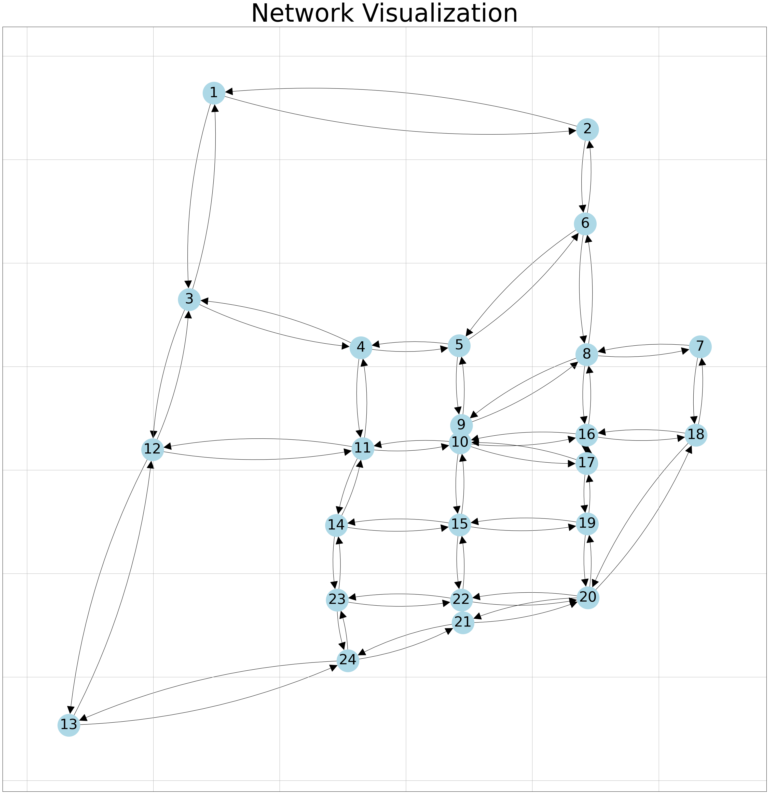
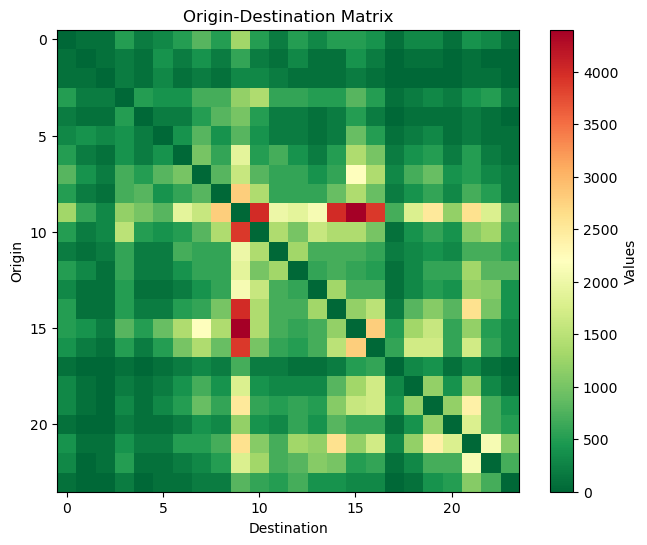
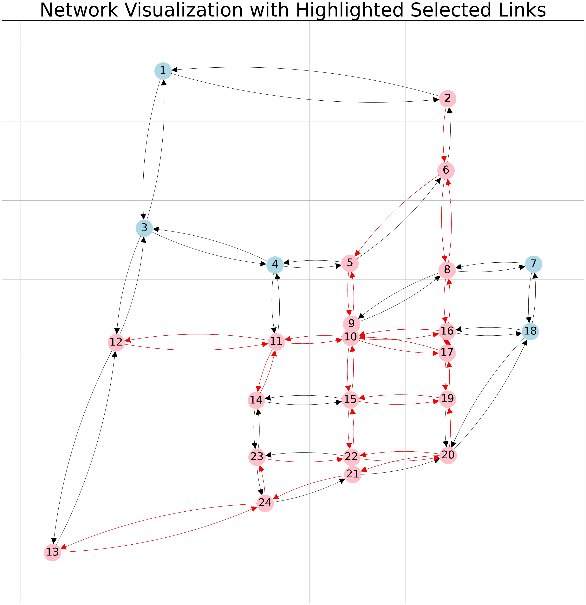
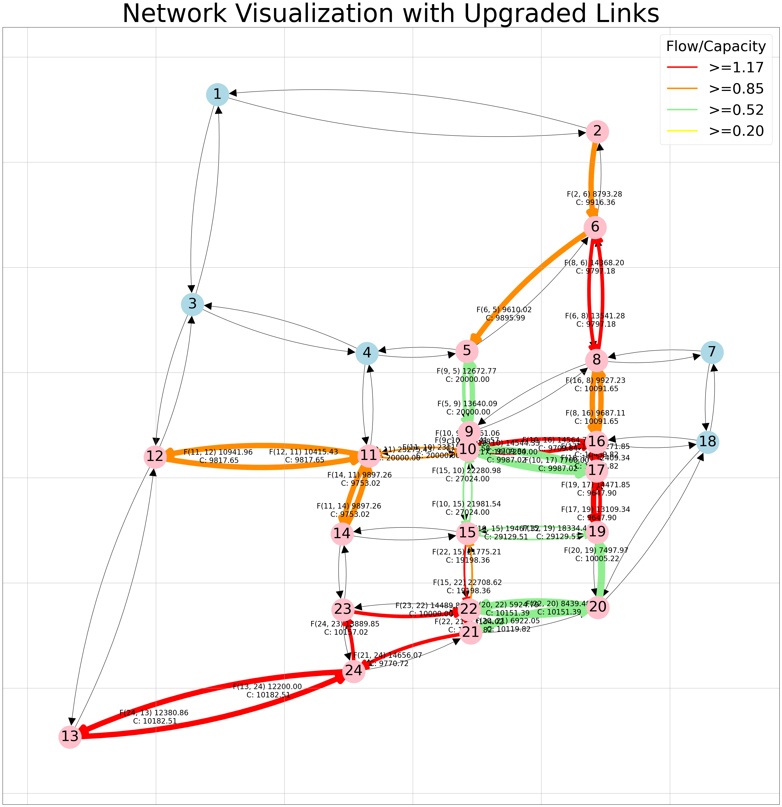
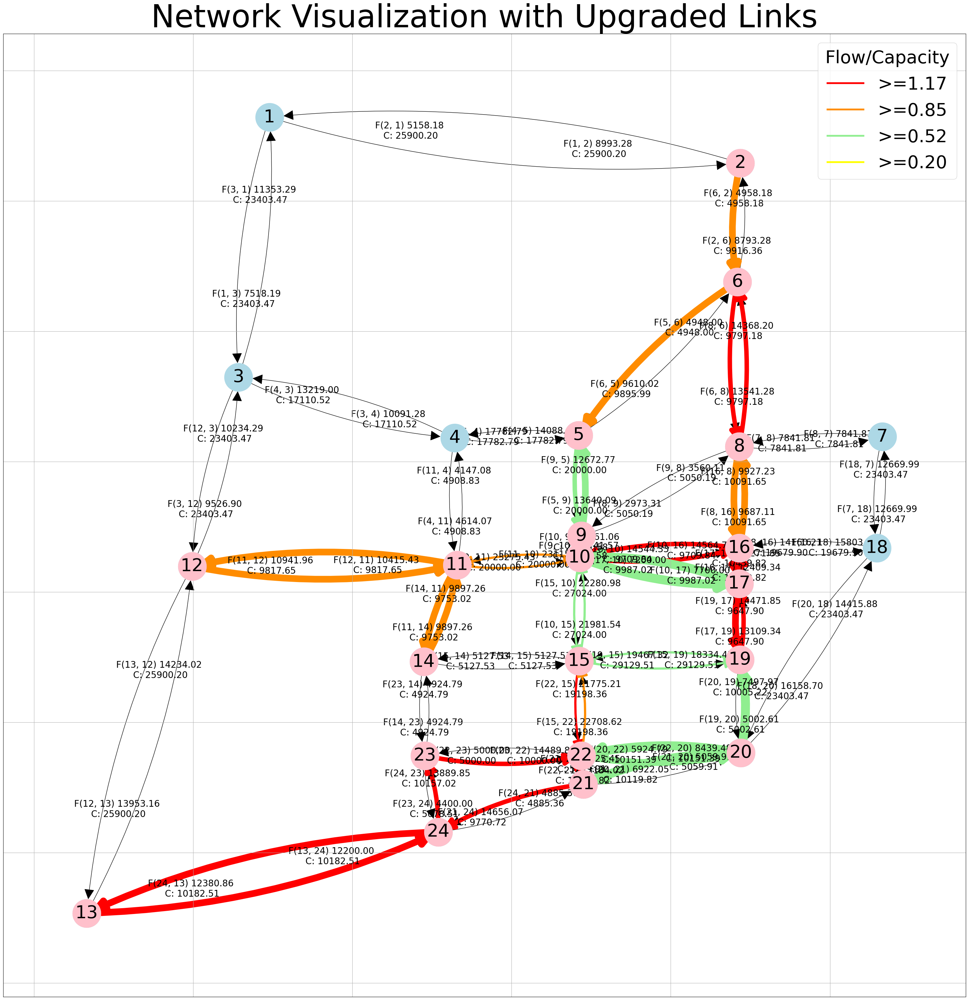

Python implementation with mixed integer linear program#
Note
Gurobi cannot be loaded in this online book, so download this notebook to work on it with Gurobi locally installed.Instruction on how to do that are in the README.md and PA_2_4_A_gurobilicious.ipynb of week 2.4.
MUDE Exam Information
The road network design problem serves as an example for solving a complex optimization problem. You’re not expected to understand the problem details for the exam.
Data preprocessing#
We use some networks from the well-known transportation networks for benchmarking repository as well as a small toy network for case studies of NDPs. The following functions read data from this repository and perform data preprocessing to have the input and the parameters required for our case studies.
# import required packages
import os
import time
import gurobipy as gp
import pandas as pd
import numpy as np
from matplotlib import pyplot as plt
# read network file, a function to import the road networks
def read_net(net_file):
"""
read network file
"""
net_data = pd.read_csv(net_file, skiprows=8, sep='\t')
# make sure all headers are lower case and without trailing spaces
trimmed = [s.strip().lower() for s in net_data.columns]
net_data.columns = trimmed
# And drop the silly first and last columns
net_data.drop(['~', ';'], axis=1, inplace=True)
# make sure everything makes sense (otherwise some solvers throw errors)
net_data.loc[net_data['free_flow_time'] <= 0, 'free_flow_time'] = 1e-6
net_data.loc[net_data['capacity'] <= 0, 'capacity'] = 1e-6
net_data.loc[net_data['length'] <= 0, 'length'] = 1e-6
net_data.loc[net_data['power'] <= 1, 'power'] = int(4)
net_data['init_node'] = net_data['init_node'].astype(int)
net_data['term_node'] = net_data['term_node'].astype(int)
net_data['b'] = net_data['b'].astype(float)
# extract features in dict format
links = list(zip(net_data['init_node'], net_data['term_node']))
caps = dict(zip(links, net_data['capacity']))
fftt = dict(zip(links, net_data['free_flow_time']))
lent = dict(zip(links, net_data['length']))
alpha = dict(zip(links, net_data['b']))
beta = dict(zip(links, net_data['power']))
net = {'capacity': caps, 'free_flow': fftt, 'length': lent, 'alpha': alpha, 'beta': beta}
return net
# read OD matrix (demand), a function to import Origin and Destination Matrices,
# that is a table that says how many vehicles go from i to j
def read_od(od_file):
"""
read OD matrix
"""
f = open(od_file, 'r')
all_rows = f.read()
blocks = all_rows.split('Origin')[1:]
matrix = {}
for k in range(len(blocks)):
orig = blocks[k].split('\n')
dests = orig[1:]
origs = int(orig[0])
d = [eval('{' + a.replace(';', ',').replace(' ', '') + '}') for a in dests]
destinations = {}
for i in d:
destinations = {**destinations, **i}
matrix[origs] = destinations
zones = max(matrix.keys())
od_dict = {}
for i in range(zones):
for j in range(zones):
demand = matrix.get(i + 1, {}).get(j + 1, 0)
if demand:
od_dict[(i + 1, j + 1)] = demand
else:
od_dict[(i + 1, j + 1)] = 0
return od_dict
# read case study data, we will have different case studies that have different demand and road network
def read_cases(networks, input_dir):
"""
read case study data
"""
# dictionaries for network and OD files
net_dict = {}
ods_dict = {}
# selected case studies
if networks:
cases = [case for case in networks]
else:
# all folders available (each one for one specific case)
cases = [x for x in os.listdir(input_dir) if os.path.isdir(os.path.join(input_dir, x))]
# iterate through cases and read network and OD
for case in cases:
mod = os.path.join(input_dir, case)
mod_files = os.listdir(mod)
for i in mod_files:
# read network
if i.lower()[-8:] == 'net.tntp':
net_file = os.path.join(mod, i)
net_dict[case] = read_net(net_file)
# read OD matrix
if 'TRIPS' in i.upper() and i.lower()[-5:] == '.tntp':
ods_file = os.path.join(mod, i)
ods_dict[case] = read_od(ods_file)
return net_dict, ods_dict
# create node-destination demand matrix
def create_nd_matrix(ods_data, origins, destinations, nodes):
# create node-destination demand matrix (not a regular OD!)
demand = {(n, d): 0 for n in nodes for d in destinations}
for r in origins:
for s in destinations:
if (r, s) in ods_data:
demand[r, s] = ods_data[r, s]
for s in destinations:
demand[s, s] = - sum(demand[j, s] for j in origins)
return demand
Now that we have the required functions for reading and processing the data, let’s define some problem parameters and prepare the input.
# define parameters, case study (network) list and the directory where their files are
extension_factor = 2 # capacity after extension (1.5 means add 50% of existing capacity)
extension_max_no = 40 # max number of links to add capacity to (simplified budget limit)
timelimit = 300 # seconds
beta = 2 # parameter to use in link travel time function (explained later)
networks_dir = 'input/TransportationNetworks'
# prep data
net_dict, ods_dict = read_cases(networks, networks_dir)
# Let's load the network and demand (OD matrix) data of the first network (SiouxFalls) to two dictionaries for our first case study.
# Reminding that we are using the SiouxFalls network which is one of the most used networks in transportation reserach: https://github.com/bstabler/TransportationNetworks/blob/master/SiouxFalls/Sioux-Falls-Network.pdf
net_data, ods_data = net_dict[networks[0]], ods_dict[networks[0]]
## now let's prepare the data in a format readable by gurobi
# prep links, nodes, and free flow travel times
links = list(net_data['capacity'].keys())
nodes = np.unique([list(edge) for edge in links])
fftts = net_data['free_flow']
# auxiliary parameters (dict format) to keep the problem linear (capacities as parameters rather than variables)
# this is the capacity of a road link in vehicles per hour without the expansion
cap_normal = {(i, j): cap for (i, j), cap in net_data['capacity'].items()}
#with the expansion
cap_extend = {(i, j): cap * extension_factor for (i, j), cap in net_data['capacity'].items()}
# origins and destinations
origs = np.unique([orig for (orig, dest) in list(ods_data.keys())])
dests = np.unique([dest for (orig, dest) in list(ods_data.keys())])
# demand in node-destination form
# an OD-matrix is built
demand = create_nd_matrix(ods_data, origs, dests, nodes)
C:\Users\tomvanwoudenbe\AppData\Local\Temp\ipykernel_7368\2029668135.py:15: FutureWarning: Setting an item of incompatible dtype is deprecated and will raise in a future error of pandas. Value '1e-06' has dtype incompatible with int64, please explicitly cast to a compatible dtype first.
net_data.loc[net_data['free_flow_time'] <= 0, 'free_flow_time'] = 1e-6
C:\Users\tomvanwoudenbe\AppData\Local\Temp\ipykernel_7368\2029668135.py:17: FutureWarning: Setting an item of incompatible dtype is deprecated and will raise in a future error of pandas. Value '1e-06' has dtype incompatible with int64, please explicitly cast to a compatible dtype first.
net_data.loc[net_data['length'] <= 0, 'length'] = 1e-6
C:\Users\tomvanwoudenbe\AppData\Local\Temp\ipykernel_7368\2029668135.py:16: FutureWarning: Setting an item of incompatible dtype is deprecated and will raise in a future error of pandas. Value '1e-06' has dtype incompatible with int64, please explicitly cast to a compatible dtype first.
net_data.loc[net_data['capacity'] <= 0, 'capacity'] = 1e-6
C:\Users\tomvanwoudenbe\AppData\Local\Temp\ipykernel_7368\2029668135.py:17: FutureWarning: Setting an item of incompatible dtype is deprecated and will raise in a future error of pandas. Value '1e-06' has dtype incompatible with int64, please explicitly cast to a compatible dtype first.
net_data.loc[net_data['length'] <= 0, 'length'] = 1e-6
Visualize network#
In this section, we’ll initially visualize the network using the coordinates of the sample road network, ‘SiouxFalls’. Later, we’ll employ the same network topology to visualize the upgraded links.
Thankfully, Python offers a highly useful package for visualizing networks called ‘networkx’. We’ll leverage some of its features, so:
Feel free to explore further functionalities of the networkx package in its documentation.
Our coordinates in this specific example are in JSON format. Therefore, don’t forget to import the package accordingly.
Interested in visualizing other networks? Fantastic! However, you’ll need to check the format of your coordinates first. TAs will assist you if you wish to explore further.
The road network that we are using in the assessment is the Sioux Falls which is shown below:
# For visualization
import networkx as nx
import json
from matplotlib.lines import Line2D # this will later be used for highlighting edge colors based on values
from utils.network_visualization import network_visualization
from utils.network_visualization_highlight_link import network_visualization_highlight_links
from utils.network_visualization_upgraded import network_visualization_upgraded
coordinates_path = 'input/TransportationNetworks/SiouxFalls/SiouxFallsCoordinates.geojson'
G, pos = network_visualization(link_flow = fftts,coordinates_path= coordinates_path) # the network we create here will be used later for further visualizations!

OD Matrix#
The trips per hour matrix for this network is:
This table is what is called an OD (Origin-Destination) matrix. It tells you how many cars go from node i to node j. The paths are chosen by solving the optimization model.
# Extracting the maximum values for dimensions
data = ods_data
max_origin = max(key[0] for key in data.keys())
max_destination = max(key[1] for key in data.keys())
# Creating a DataFrame to represent the matrix
od_matrix = pd.DataFrame(index=range(1, max_origin + 1), columns=range(1, max_destination + 1))
# Populating the DataFrame with the given data
for key, value in data.items():
od_matrix.loc[key[0], key[1]] = value
# Displaying the OD matrix in table format
print("Origin-Destination Matrix:")
print(od_matrix.head(5)) # OD matric for the first 5 nodes.
Origin-Destination Matrix:
1 2 3 4 5 6 7 8 9 10 ... \
1 0 100.0 100.0 500.0 200.0 300.0 500.0 800.0 500.0 1300.0 ...
2 100.0 0 100.0 200.0 100.0 400.0 200.0 400.0 200.0 600.0 ...
3 100.0 100.0 0 200.0 100.0 300.0 100.0 200.0 100.0 300.0 ...
4 500.0 200.0 200.0 0 500.0 400.0 400.0 700.0 700.0 1200.0 ...
5 200.0 100.0 100.0 500.0 0 200.0 200.0 500.0 800.0 1000.0 ...
15 16 17 18 19 20 21 22 23 24
1 500.0 500.0 400.0 100.0 300.0 300.0 100.0 400.0 300.0 100.0
2 100.0 400.0 200.0 0 100.0 100.0 0 100.0 0 0
3 100.0 200.0 100.0 0 0 0 0 100.0 100.0 0
4 500.0 800.0 500.0 100.0 200.0 300.0 200.0 400.0 500.0 200.0
5 200.0 500.0 200.0 0 100.0 100.0 100.0 200.0 100.0 0
[5 rows x 24 columns]
# To better understand the OD matrix we can also visualize the values.
# Creating a subset matrix for visualization
subset_matrix = np.zeros((24, 24))
# Filling subset matrix with data
for i in range(1, 25):
for j in range(1, 25):
subset_matrix[i-1, j-1] = data[(i, j)]
# Plotting the heatmap
plt.figure(figsize=(8, 6))
plt.title('Origin-Destination Matrix')
plt.xlabel('Destination')
plt.ylabel('Origin')
plt.imshow(subset_matrix, cmap='RdYlGn_r', interpolation='nearest')
plt.colorbar(label='Values')
plt.show()

Modeling in Gurobi#
Initiate the Gurobi model#
First, let’s build a Gurobi model object and define some parameters based on the model type. We have a mixed integer quadratic program (MIQP), that’s because the objective function has a quadratic term, which we want to transform to a mixed integer linear program (MILP) and solve using the branch and bound method. We discuss the transformations from quadratic to linear when we introduce quadratic terms.
## create a gurobi model object
model = gp.Model()
# define some important parameters for solving the model with gurobi
model.params.TimeLimit = timelimit # 300 seconds timelimit since it can take long to reduce the gap to zero (change and play around if you want)
model.params.NonConvex = 2 # our problem is not convex as it is now, so we let gurobi know to use the right transformation and solutions
#about convexity in optimization: a convex function will be a continuous functin that will have one minimum
#(or maximum depending on the problem), therefore in any point that you starting searching for a solution you can follow the gradient
#to search for that extreme point. Non-convex problems can have local minimum (or maximum) points that will make you stuck in the process
#of searching for the solution
model.params.PreQLinearize = 1 # useful parameter to ask gurobi to try to linearize non-linear terms
Set parameter TimeLimit to value 300
Set parameter NonConvex to value 2
Set parameter PreQLinearize to value 1
Decision variables#
As you will see below in the code block, we have one extra set of variables called x2 (x square). This is to help Gurobi isolate quadratic terms and perform required transformations based on MCE to keep the problem linear. This is not part of your learning goals.
## decision variables:
# link selected (y_ij); i: a_node, j: b_node (selected links for capacity expansion)
link_selected = model.addVars(links, vtype=gp.GRB.BINARY, name='y')
# link flows (x_ij); i: a_node, j: b_node
link_flow = model.addVars(links, vtype=gp.GRB.CONTINUOUS, name='x')
# link flows per destination s (xs_ijs); i: a_node, j: b_node, s: destination
dest_flow = model.addVars(links, dests, vtype=gp.GRB.CONTINUOUS, name='xs')
# link flow square (x2_ij); i: a_node, j: b_node (dummy variable for handling quadratic terms, you do not need to know this)
link_flow_sqr = model.addVars(links, vtype=gp.GRB.CONTINUOUS, name='x2')
Objective function#
## objective function (total travel time)
# total travel time = sum (link flow * link travel time)
# link travel time = free flow travel time * (1 + (flow / capacity))
# capacity = selected links * base capacity + other links * extended capacity
# other links: 1 - selected links
#note that this equation allows the number of vehicles to be greater than the capacity, this just adds more penalty in terms of travel time.
model.setObjective(
gp.quicksum(fftts[i, j] * link_flow[i, j] +
fftts[i, j] * (beta/cap_normal[i, j]) * link_flow_sqr[i, j] -
fftts[i, j] * (beta/cap_normal[i, j]) * link_flow_sqr[i, j] * link_selected[i, j] +
fftts[i, j] * (beta/cap_extend[i, j]) * link_flow_sqr[i, j] * link_selected[i, j]
for (i, j) in links))
Constraints#
We have four sets of constraints for this problem. Let’s go through them one by one and add them to the model.
1. Budget constraint#
## constraints
# budget constraints, c_bgt is the name of the constraint
c_bgt = model.addConstr(gp.quicksum(link_selected[i, j] for (i, j) in links) <= extension_max_no)
2. Link flow conservation constraints#
# link flow conservation (destination flows and link flows), c_lfc is the name of the constraint
c_lfc = model.addConstrs(gp.quicksum(dest_flow[i, j, s] for s in dests) == link_flow[i, j] for (i, j) in links)
3. Node flow conservation constraints#
# node flow conservation (demand), c_nfc is the name of the constraint
c_nfc = model.addConstrs(
gp.quicksum(dest_flow[i, j, s] for j in nodes if (i, j) in links) -
gp.quicksum(dest_flow[j, i, s] for j in nodes if (j, i) in links) == demand[i, s]
for i in nodes for s in dests
)
4. Quadratic variable constraints (you do not need to fully understand this)#
# dummy constraints for handling quadratic terms
c_qrt = model.addConstrs(link_flow_sqr[i, j] == link_flow[i, j] * link_flow[i, j] for (i, j) in links)
Solving the model#
3#Next we are ready to solve the model
model.optimize()
Show code cell output
Gurobi Optimizer version 11.0.0 build v11.0.0rc2 (win64 - Windows 10.0 (19045.2))
CPU model: 11th Gen Intel(R) Core(TM) i7-1185G7 @ 3.00GHz, instruction set [SSE2|AVX|AVX2|AVX512]
Thread count: 4 physical cores, 8 logical processors, using up to 8 threads
Optimize a model with 729 rows, 2052 columns and 5776 nonzeros
Model fingerprint: 0xc194c119
Model has 76 quadratic objective terms
Model has 76 quadratic constraints
Variable types: 1976 continuous, 76 integer (76 binary)
Coefficient statistics:
Matrix range [1e+00, 5e+04]
QMatrix range [1e+00, 1e+00]
QLMatrix range [1e+00, 1e+00]
Objective range [2e-04, 1e+01]
QObjective range [2e-04, 4e-03]
Bounds range [1e+00, 1e+00]
RHS range [4e+01, 5e+04]
Presolve time: 0.00s
Presolved: 1109 rows, 2280 columns, 6536 nonzeros
Presolved model has 152 SOS constraint(s)
Presolved model has 76 bilinear constraint(s)
Solving non-convex MIQCP
Variable types: 2128 continuous, 152 integer (152 binary)
Root relaxation: unbounded, 0 iterations, 0.00 seconds (0.00 work units)
Exploring 100 nodes in MinRel heuristic
No solution found by MinRel heuristic
Nodes | Current Node | Objective Bounds | Work
Expl Unexpl | Obj Depth IntInf | Incumbent BestBd Gap | It/Node Time
0 2 postponed 0 - - - - 2s
53 92 postponed 9 - - - 1121 5s
168 287 postponed 23 - - - 806 10s
294 308 postponed 39 - - - 839 15s
359 496 postponed 9 - - - 878 21s
565 588 postponed 39 - - - 904 28s
699 627 infeasible 46 - - - 904 36s
800 715 postponed 36 - - - 930 44s
942 792 postponed 50 - - - 954 53s
1081 856 postponed 43 - - - 970 64s
1227 1136 postponed 52 - - - 990 74s
1611 1138 -1.000e+100 27 0 - - - 851 75s
4952 3295 1.0664e+07 269 40 - 8262332.74 - 296 80s
* 6340 2386 486 1.010400e+07 8262332.74 18.2% 235 80s
H 6471 1840 1.000322e+07 8264980.83 17.4% 230 80s
H 6500 1680 9942353.7691 8264980.83 16.9% 229 80s
H 6849 1935 9941539.9161 8264980.83 16.9% 221 81s
H 7005 2070 9939631.3023 8264980.83 16.8% 218 81s
H 7301 2256 9939100.0429 8264980.83 16.8% 212 82s
H 7421 2365 9938587.8812 8264980.83 16.8% 210 82s
H 7617 2493 9928315.3997 8264980.83 16.8% 206 82s
H 7913 2724 9927206.8029 8264980.83 16.7% 200 83s
H 8390 3019 9926660.1632 8264980.83 16.7% 191 83s
H 8685 3176 9912764.1909 8264980.83 16.6% 186 84s
H 9305 3660 9912227.7870 8264980.83 16.6% 177 84s
H 9326 3061 9824073.3956 8264980.83 15.9% 176 84s
H 9436 2888 9739145.2810 8264980.83 15.1% 175 84s
9463 2973 cutoff 108 9739145.28 8291740.44 14.9% 175 85s
H10305 3522 9737649.1214 8302279.85 14.7% 166 86s
H11003 3970 9683384.9860 8310488.01 14.2% 159 87s
H12152 4639 9660835.2244 8313955.71 13.9% 147 89s
H12240 4639 9659016.8493 8313955.71 13.9% 146 89s
H12592 4860 9658349.6024 8314213.86 13.9% 143 89s
12777 5169 8351058.38 21 188 9658349.60 8314213.86 13.9% 141 90s
H12828 4992 9616115.7400 8314213.86 13.5% 141 90s
H13765 4961 9532383.0903 8315230.17 12.8% 134 91s
H15009 5634 9497677.5159 8318304.06 12.4% 128 93s
H15028 5631 9495510.3920 8318393.98 12.4% 128 93s
15583 6269 8392622.74 29 205 9495510.39 8319652.84 12.4% 126 95s
18646 8605 8450538.51 28 189 9495510.39 8329839.66 12.3% 116 101s
21492 10757 8851178.38 62 116 9495510.39 8338570.60 12.2% 110 107s
22766 11828 9379860.14 52 127 9495510.39 8341823.21 12.1% 107 110s
25619 13859 9036193.47 57 99 9495510.39 8348055.17 12.1% 102 115s
H26258 14283 9489473.7499 8348140.97 12.0% 101 116s
H27647 14996 9479089.0090 8350951.81 11.9% 99.5 118s
28138 15372 cutoff 74 9479089.01 8352940.47 11.9% 99.0 120s
30687 17297 9261497.46 65 100 9479089.01 8356508.78 11.8% 97.2 126s
32888 18731 8636801.83 40 161 9479089.01 8360876.27 11.8% 95.2 130s
34902 20548 8459282.18 27 183 9479089.01 8364269.83 11.8% 93.2 136s
37091 22262 9323450.79 57 116 9479089.01 8367211.55 11.7% 91.9 142s
38725 23356 cutoff 74 9479089.01 8368870.76 11.7% 90.5 146s
40181 24601 8459977.40 19 189 9479089.01 8370553.52 11.7% 89.7 150s
41685 25398 9361478.33 47 125 9479089.01 8371019.20 11.7% 88.9 155s
43059 26485 8998199.53 64 105 9479089.01 8372336.24 11.7% 88.5 160s
44507 27611 8562775.61 39 183 9479089.01 8373312.65 11.7% 87.8 165s
46782 29149 cutoff 79 9479089.01 8376092.02 11.6% 86.9 172s
48215 30177 8556913.71 24 201 9479089.01 8377859.50 11.6% 86.5 176s
49669 31286 cutoff 56 9479089.01 8378880.79 11.6% 86.2 180s
51966 33016 9129298.00 68 95 9479089.01 8380711.70 11.6% 85.6 187s
53201 33894 9044084.49 53 120 9479089.01 8381425.28 11.6% 85.3 190s
54897 35137 8996549.50 52 125 9479089.01 8382692.15 11.6% 84.7 195s
56506 36293 infeasible 72 9479089.01 8383703.55 11.6% 84.4 200s
58060 37498 8408161.36 34 193 9479089.01 8384552.73 11.5% 84.1 206s
H58160 37130 9462130.1454 8384552.73 11.4% 84.1 206s
H58778 37211 9461499.7936 8384552.73 11.4% 84.0 208s
58924 37806 9211147.70 63 109 9461499.79 8384707.42 11.4% 84.0 211s
60542 39029 cutoff 62 9461499.79 8385697.37 11.4% 83.6 216s
62157 40120 9015621.09 69 96 9461499.79 8386512.47 11.4% 83.4 221s
63817 41385 8513694.46 39 172 9461499.79 8387254.45 11.4% 83.1 227s
64724 41995 8567909.56 36 183 9461499.79 8387533.55 11.4% 82.9 230s
H64973 41398 9443620.0498 8387616.20 11.2% 82.9 230s
H66419 42092 9438489.0079 8388351.71 11.1% 82.3 234s
H66513 42080 9437991.4208 8388490.61 11.1% 82.3 234s
66857 42709 cutoff 59 9437991.42 8388493.30 11.1% 82.2 236s
68311 43762 8501334.33 43 166 9437991.42 8389794.00 11.1% 81.9 241s
69891 44742 9092516.20 67 92 9437991.42 8391199.43 11.1% 81.8 246s
71416 45898 8562418.71 28 179 9437991.42 8392313.79 11.1% 81.6 251s
73120 46986 cutoff 75 9437991.42 8393291.73 11.1% 81.3 256s
74703 48173 8496226.72 26 171 9437991.42 8394065.78 11.1% 81.4 261s
76279 49277 8578233.77 48 159 9437991.42 8394994.79 11.1% 81.4 267s
77859 50597 8656038.37 38 145 9437991.42 8396052.99 11.0% 81.4 272s
78765 51012 9421105.07 61 92 9437991.42 8396267.16 11.0% 81.3 275s
80228 52261 8472284.96 30 193 9437991.42 8397087.99 11.0% 81.2 280s
82009 53386 8461258.97 29 185 9437991.42 8397590.23 11.0% 81.0 290s
83537 54487 8475722.77 34 182 9437991.42 8398439.19 11.0% 80.9 295s
85213 55352 8764359.00 45 160 9437991.42 8399296.42 11.0% 80.9 300s
Cutting planes:
Gomory: 18
Cover: 4
Implied bound: 34
Flow cover: 39
RLT: 8
Relax-and-lift: 29
BQP: 1
Explored 85590 nodes (6912974 simplex iterations) in 300.07 seconds (316.34 work units)
Thread count was 8 (of 8 available processors)
Solution count 10: 9.43799e+06 9.43849e+06 9.44362e+06 ... 9.53238e+06
Time limit reached
Best objective 9.437991420819e+06, best bound 8.399296423721e+06, gap 11.0055%
Note that if you didn’t find a solution, you can rerun the previous cell to continue the optimization for another 300 seconds (defined by timelimit).
Analysis#
# fetch optimal decision variables and Objective Function values
link_flows = {(i, j): link_flow[i, j].X for (i, j) in links}
links_selected = {(i, j): link_selected[i, j].X for (i, j) in links}
total_travel_time = model.ObjVal
# Let's print right now the objective function
print("Optimal Objective function Value", model.objVal)
# Let's print right now the decision variables
for var in model.getVars():
print(f"{var.varName}: {round(var.X, 3)}") # print the optimal decision variable values.
Show code cell output
Optimal Objective function Value 9437991.420819432
y[1,2]: 0.0
y[1,3]: 0.0
y[2,1]: 0.0
y[2,6]: 1.0
y[3,1]: 0.0
y[3,4]: 0.0
y[3,12]: 0.0
y[4,3]: 0.0
y[4,5]: 0.0
y[4,11]: 0.0
y[5,4]: 0.0
y[5,6]: 0.0
y[5,9]: 1.0
y[6,2]: 0.0
y[6,5]: 1.0
y[6,8]: 1.0
y[7,8]: 0.0
y[7,18]: 0.0
y[8,6]: 1.0
y[8,7]: 0.0
y[8,9]: 0.0
y[8,16]: 1.0
y[9,5]: 1.0
y[9,8]: 0.0
y[9,10]: 1.0
y[10,9]: 1.0
y[10,11]: 1.0
y[10,15]: 1.0
y[10,16]: 1.0
y[10,17]: 1.0
y[11,4]: 0.0
y[11,10]: 1.0
y[11,12]: 1.0
y[11,14]: 1.0
y[12,3]: 0.0
y[12,11]: 1.0
y[12,13]: 0.0
y[13,12]: 0.0
y[13,24]: 1.0
y[14,11]: 1.0
y[14,15]: 0.0
y[14,23]: 0.0
y[15,10]: 1.0
y[15,14]: 0.0
y[15,19]: 1.0
y[15,22]: 1.0
y[16,8]: 1.0
y[16,10]: 1.0
y[16,17]: 1.0
y[16,18]: 0.0
y[17,10]: 1.0
y[17,16]: 1.0
y[17,19]: 1.0
y[18,7]: 0.0
y[18,16]: 0.0
y[18,20]: 0.0
y[19,15]: 1.0
y[19,17]: 1.0
y[19,20]: 0.0
y[20,18]: 0.0
y[20,19]: 1.0
y[20,21]: 1.0
y[20,22]: 1.0
y[21,20]: 0.0
y[21,22]: 0.0
y[21,24]: 1.0
y[22,15]: 1.0
y[22,20]: 1.0
y[22,21]: 1.0
y[22,23]: 0.0
y[23,14]: 0.0
y[23,22]: 1.0
y[23,24]: 0.0
y[24,13]: 1.0
y[24,21]: 0.0
y[24,23]: 1.0
x[1,2]: 8993.283
x[1,3]: 7518.186
x[2,1]: 5158.181
x[2,6]: 8793.283
x[3,1]: 11353.288
x[3,4]: 10091.284
x[3,12]: 9526.902
x[4,3]: 13219.0
x[4,5]: 14088.084
x[4,11]: 4614.073
x[5,4]: 17782.794
x[5,6]: 4947.995
x[5,9]: 13640.089
x[6,2]: 4958.181
x[6,5]: 9610.02
x[6,8]: 13541.278
x[7,8]: 7841.811
x[7,18]: 12669.987
x[8,6]: 14368.201
x[8,7]: 7841.811
x[8,9]: 2973.31
x[8,16]: 9687.107
x[9,5]: 12672.774
x[9,8]: 3560.114
x[9,10]: 22741.575
x[10,9]: 22461.065
x[10,11]: 23275.426
x[10,15]: 21981.537
x[10,16]: 14564.753
x[10,17]: 7700.0
x[11,4]: 4147.08
x[11,10]: 23115.897
x[11,12]: 10941.956
x[11,14]: 9897.264
x[12,3]: 10234.288
x[12,11]: 10415.433
x[12,13]: 13953.158
x[13,12]: 14234.022
x[13,24]: 12200.0
x[14,11]: 9897.264
x[14,15]: 5127.526
x[14,23]: 4924.791
x[15,10]: 22280.981
x[15,14]: 5127.526
x[15,19]: 18334.465
x[15,22]: 22708.62
x[16,8]: 9927.226
x[16,10]: 14544.328
x[16,17]: 12409.34
x[16,18]: 15803.034
x[17,10]: 7200.0
x[17,16]: 14271.852
x[17,19]: 13109.34
x[18,7]: 12669.987
x[18,16]: 14160.215
x[18,20]: 16158.7
x[19,15]: 19467.319
x[19,17]: 14471.852
x[19,20]: 5002.608
x[20,18]: 14415.88
x[20,19]: 7497.974
x[20,21]: 6922.051
x[20,22]: 5924.791
x[21,20]: 5059.912
x[21,22]: 5225.445
x[21,24]: 14656.073
x[22,15]: 21775.209
x[22,20]: 8439.477
x[22,21]: 13134.022
x[22,23]: 5000.0
x[23,14]: 4924.791
x[23,22]: 14489.852
x[23,24]: 4400.0
x[24,13]: 12380.863
x[24,21]: 4885.358
x[24,23]: 13889.852
xs[1,2,1]: 0.0
xs[1,2,2]: 2100.0
xs[1,2,3]: 0.0
xs[1,2,4]: 0.0
xs[1,2,5]: 0.0
xs[1,2,6]: 1200.0
xs[1,2,7]: 1300.0
xs[1,2,8]: 2200.0
xs[1,2,9]: 0.0
xs[1,2,10]: 0.0
xs[1,2,11]: 0.0
xs[1,2,12]: 0.0
xs[1,2,13]: 0.0
xs[1,2,14]: 0.0
xs[1,2,15]: 0.0
xs[1,2,16]: 1111.469
xs[1,2,17]: 400.0
xs[1,2,18]: 100.0
xs[1,2,19]: 281.814
xs[1,2,20]: 300.0
xs[1,2,21]: 0.0
xs[1,2,22]: 0.0
xs[1,2,23]: 0.0
xs[1,2,24]: 0.0
xs[1,3,1]: 0.0
xs[1,3,2]: 0.0
xs[1,3,3]: 200.0
xs[1,3,4]: 700.0
xs[1,3,5]: 300.0
xs[1,3,6]: 0.0
xs[1,3,7]: 0.0
xs[1,3,8]: 0.0
xs[1,3,9]: 700.0
xs[1,3,10]: 1900.0
xs[1,3,11]: 700.0
xs[1,3,12]: 300.0
xs[1,3,13]: 800.0
xs[1,3,14]: 400.0
xs[1,3,15]: 500.0
xs[1,3,16]: 0.0
xs[1,3,17]: 0.0
xs[1,3,18]: 0.0
xs[1,3,19]: 18.186
xs[1,3,20]: 0.0
xs[1,3,21]: 100.0
xs[1,3,22]: 500.0
xs[1,3,23]: 300.0
xs[1,3,24]: 100.0
xs[2,1,1]: 3158.181
xs[2,1,2]: 0.0
xs[2,1,3]: 100.0
xs[2,1,4]: 200.0
xs[2,1,5]: 100.0
xs[2,1,6]: 0.0
xs[2,1,7]: 0.0
xs[2,1,8]: 0.0
xs[2,1,9]: 200.0
xs[2,1,10]: 600.0
xs[2,1,11]: 200.0
xs[2,1,12]: 100.0
xs[2,1,13]: 300.0
xs[2,1,14]: 100.0
xs[2,1,15]: 0.0
xs[2,1,16]: 0.0
xs[2,1,17]: 0.0
xs[2,1,18]: 0.0
xs[2,1,19]: 0.0
xs[2,1,20]: 0.0
xs[2,1,21]: 0.0
xs[2,1,22]: 100.0
xs[2,1,23]: 0.0
xs[2,1,24]: 0.0
xs[2,6,1]: 0.0
xs[2,6,2]: 0.0
xs[2,6,3]: 0.0
xs[2,6,4]: 0.0
xs[2,6,5]: 0.0
xs[2,6,6]: 1600.0
xs[2,6,7]: 1500.0
xs[2,6,8]: 2600.0
xs[2,6,9]: 0.0
xs[2,6,10]: 0.0
xs[2,6,11]: 0.0
xs[2,6,12]: 0.0
xs[2,6,13]: 0.0
xs[2,6,14]: 0.0
xs[2,6,15]: 100.0
xs[2,6,16]: 1511.469
xs[2,6,17]: 600.0
xs[2,6,18]: 100.0
xs[2,6,19]: 381.814
xs[2,6,20]: 400.0
xs[2,6,21]: 0.0
xs[2,6,22]: 0.0
xs[2,6,23]: 0.0
xs[2,6,24]: 0.0
xs[3,1,1]: 5641.819
xs[3,1,2]: 2000.0
xs[3,1,3]: 0.0
xs[3,1,4]: 0.0
xs[3,1,5]: 0.0
xs[3,1,6]: 900.0
xs[3,1,7]: 800.0
xs[3,1,8]: 1400.0
xs[3,1,9]: 0.0
xs[3,1,10]: 0.0
xs[3,1,11]: 0.0
xs[3,1,12]: 0.0
xs[3,1,13]: 0.0
xs[3,1,14]: 0.0
xs[3,1,15]: 0.0
xs[3,1,16]: 611.469
xs[3,1,17]: 0.0
xs[3,1,18]: 0.0
xs[3,1,19]: 0.0
xs[3,1,20]: 0.0
xs[3,1,21]: 0.0
xs[3,1,22]: 0.0
xs[3,1,23]: 0.0
xs[3,1,24]: 0.0
xs[3,4,1]: 0.0
xs[3,4,2]: 0.0
xs[3,4,3]: 0.0
xs[3,4,4]: 3000.0
xs[3,4,5]: 900.0
xs[3,4,6]: 0.0
xs[3,4,7]: 0.0
xs[3,4,8]: 0.0
xs[3,4,9]: 2200.0
xs[3,4,10]: 2200.0
xs[3,4,11]: 573.098
xs[3,4,12]: 0.0
xs[3,4,13]: 0.0
xs[3,4,14]: 500.0
xs[3,4,15]: 600.0
xs[3,4,16]: 0.0
xs[3,4,17]: 100.0
xs[3,4,18]: 0.0
xs[3,4,19]: 18.186
xs[3,4,20]: 0.0
xs[3,4,21]: 0.0
xs[3,4,22]: 0.0
xs[3,4,23]: 0.0
xs[3,4,24]: 0.0
xs[3,12,1]: 0.0
xs[3,12,2]: 0.0
xs[3,12,3]: 0.0
xs[3,12,4]: 0.0
xs[3,12,5]: 0.0
xs[3,12,6]: 0.0
xs[3,12,7]: 0.0
xs[3,12,8]: 0.0
xs[3,12,9]: 0.0
xs[3,12,10]: 0.0
xs[3,12,11]: 426.902
xs[3,12,12]: 3400.0
xs[3,12,13]: 3100.0
xs[3,12,14]: 0.0
xs[3,12,15]: 0.0
xs[3,12,16]: 0.0
xs[3,12,17]: 0.0
xs[3,12,18]: 0.0
xs[3,12,19]: 0.0
xs[3,12,20]: 0.0
xs[3,12,21]: 300.0
xs[3,12,22]: 600.0
xs[3,12,23]: 1100.0
xs[3,12,24]: 600.0
xs[4,3,1]: 3919.0
xs[4,3,2]: 1100.0
xs[4,3,3]: 1700.0
xs[4,3,4]: 0.0
xs[4,3,5]: 0.0
xs[4,3,6]: 0.0
xs[4,3,7]: 0.0
xs[4,3,8]: 0.0
xs[4,3,9]: 0.0
xs[4,3,10]: 0.0
xs[4,3,11]: 0.0
xs[4,3,12]: 2900.0
xs[4,3,13]: 2200.0
xs[4,3,14]: 0.0
xs[4,3,15]: 0.0
xs[4,3,16]: 0.0
xs[4,3,17]: 0.0
xs[4,3,18]: 0.0
xs[4,3,19]: 0.0
xs[4,3,20]: 0.0
xs[4,3,21]: 200.0
xs[4,3,22]: 0.0
xs[4,3,23]: 700.0
xs[4,3,24]: 500.0
xs[4,5,1]: 0.0
xs[4,5,2]: 0.0
xs[4,5,3]: 0.0
xs[4,5,4]: 0.0
xs[4,5,5]: 2000.0
xs[4,5,6]: 900.0
xs[4,5,7]: 400.0
xs[4,5,8]: 969.898
xs[4,5,9]: 2900.0
xs[4,5,10]: 3400.0
xs[4,5,11]: 0.0
xs[4,5,12]: 0.0
xs[4,5,13]: 0.0
xs[4,5,14]: 0.0
xs[4,5,15]: 1100.0
xs[4,5,16]: 800.0
xs[4,5,17]: 600.0
xs[4,5,18]: 100.0
xs[4,5,19]: 218.186
xs[4,5,20]: 300.0
xs[4,5,21]: 0.0
xs[4,5,22]: 400.0
xs[4,5,23]: 0.0
xs[4,5,24]: 0.0
xs[4,11,1]: 0.0
xs[4,11,2]: 0.0
xs[4,11,3]: 0.0
xs[4,11,4]: 0.0
xs[4,11,5]: 0.0
xs[4,11,6]: 0.0
xs[4,11,7]: 0.0
xs[4,11,8]: 0.0
xs[4,11,9]: 0.0
xs[4,11,10]: 0.0
xs[4,11,11]: 3141.599
xs[4,11,12]: 0.0
xs[4,11,13]: 0.0
xs[4,11,14]: 1472.474
xs[4,11,15]: 0.0
xs[4,11,16]: 0.0
xs[4,11,17]: 0.0
xs[4,11,18]: 0.0
xs[4,11,19]: 0.0
xs[4,11,20]: 0.0
xs[4,11,21]: 0.0
xs[4,11,22]: 0.0
xs[4,11,23]: 0.0
xs[4,11,24]: 0.0
xs[5,4,1]: 2641.819
xs[5,4,2]: 900.0
xs[5,4,3]: 1500.0
xs[5,4,4]: 6700.0
xs[5,4,5]: 0.0
xs[5,4,6]: 0.0
xs[5,4,7]: 0.0
xs[5,4,8]: 0.0
xs[5,4,9]: 0.0
xs[5,4,10]: 0.0
xs[5,4,11]: 1168.501
xs[5,4,12]: 2300.0
xs[5,4,13]: 1600.0
xs[5,4,14]: 472.474
xs[5,4,15]: 0.0
xs[5,4,16]: 0.0
xs[5,4,17]: 0.0
xs[5,4,18]: 0.0
xs[5,4,19]: 0.0
xs[5,4,20]: 0.0
xs[5,4,21]: 0.0
xs[5,4,22]: 0.0
xs[5,4,23]: 200.0
xs[5,4,24]: 300.0
xs[5,6,1]: 0.0
xs[5,6,2]: 0.0
xs[5,6,3]: 0.0
xs[5,6,4]: 0.0
xs[5,6,5]: 0.0
xs[5,6,6]: 2300.0
xs[5,6,7]: 600.0
xs[5,6,8]: 1469.898
xs[5,6,9]: 0.0
xs[5,6,10]: 0.0
xs[5,6,11]: 0.0
xs[5,6,12]: 0.0
xs[5,6,13]: 0.0
xs[5,6,14]: 0.0
xs[5,6,15]: 0.0
xs[5,6,16]: 78.097
xs[5,6,17]: 0.0
xs[5,6,18]: 100.0
xs[5,6,19]: 0.0
xs[5,6,20]: 400.0
xs[5,6,21]: 0.0
xs[5,6,22]: 0.0
xs[5,6,23]: 0.0
xs[5,6,24]: 0.0
xs[5,9,1]: 0.0
xs[5,9,2]: 0.0
xs[5,9,3]: 0.0
xs[5,9,4]: 0.0
xs[5,9,5]: 0.0
xs[5,9,6]: 0.0
xs[5,9,7]: 0.0
xs[5,9,8]: 0.0
xs[5,9,9]: 4100.0
xs[5,9,10]: 5200.0
xs[5,9,11]: 0.0
xs[5,9,12]: 0.0
xs[5,9,13]: 0.0
xs[5,9,14]: 0.0
xs[5,9,15]: 1300.0
xs[5,9,16]: 1221.903
xs[5,9,17]: 800.0
xs[5,9,18]: 0.0
xs[5,9,19]: 318.186
xs[5,9,20]: 0.0
xs[5,9,21]: 100.0
xs[5,9,22]: 600.0
xs[5,9,23]: 0.0
xs[5,9,24]: 0.0
xs[6,2,1]: 3058.181
xs[6,2,2]: 1900.0
xs[6,2,3]: 0.0
xs[6,2,4]: 0.0
xs[6,2,5]: 0.0
xs[6,2,6]: 0.0
xs[6,2,7]: 0.0
xs[6,2,8]: 0.0
xs[6,2,9]: 0.0
xs[6,2,10]: 0.0
xs[6,2,11]: 0.0
xs[6,2,12]: 0.0
xs[6,2,13]: 0.0
xs[6,2,14]: 0.0
xs[6,2,15]: 0.0
xs[6,2,16]: 0.0
xs[6,2,17]: 0.0
xs[6,2,18]: 0.0
xs[6,2,19]: 0.0
xs[6,2,20]: 0.0
xs[6,2,21]: 0.0
xs[6,2,22]: 0.0
xs[6,2,23]: 0.0
xs[6,2,24]: 0.0
xs[6,5,1]: 0.0
xs[6,5,2]: 0.0
xs[6,5,3]: 669.045
xs[6,5,4]: 2700.0
xs[6,5,5]: 1500.0
xs[6,5,6]: 0.0
xs[6,5,7]: 0.0
xs[6,5,8]: 0.0
xs[6,5,9]: 400.0
xs[6,5,10]: 800.0
xs[6,5,11]: 668.501
xs[6,5,12]: 1500.0
xs[6,5,13]: 800.0
xs[6,5,14]: 372.474
xs[6,5,15]: 0.0
xs[6,5,16]: 0.0
xs[6,5,17]: 0.0
xs[6,5,18]: 0.0
xs[6,5,19]: 0.0
xs[6,5,20]: 0.0
xs[6,5,21]: 0.0
xs[6,5,22]: 0.0
xs[6,5,23]: 100.0
xs[6,5,24]: 100.0
xs[6,8,1]: 0.0
xs[6,8,2]: 0.0
xs[6,8,3]: 0.0
xs[6,8,4]: 0.0
xs[6,8,5]: 0.0
xs[6,8,6]: 0.0
xs[6,8,7]: 2500.0
xs[6,8,8]: 4869.898
xs[6,8,9]: 0.0
xs[6,8,10]: 0.0
xs[6,8,11]: 0.0
xs[6,8,12]: 0.0
xs[6,8,13]: 0.0
xs[6,8,14]: 0.0
xs[6,8,15]: 300.0
xs[6,8,16]: 2489.566
xs[6,8,17]: 1100.0
xs[6,8,18]: 300.0
xs[6,8,19]: 581.814
xs[6,8,20]: 1100.0
xs[6,8,21]: 100.0
xs[6,8,22]: 200.0
xs[6,8,23]: 0.0
xs[6,8,24]: 0.0
xs[7,8,1]: 900.0
xs[7,8,2]: 300.0
xs[7,8,3]: 100.0
xs[7,8,4]: 800.0
xs[7,8,5]: 300.0
xs[7,8,6]: 1100.0
xs[7,8,7]: 0.0
xs[7,8,8]: 3600.0
xs[7,8,9]: 41.811
xs[7,8,10]: 0.0
xs[7,8,11]: 0.0
xs[7,8,12]: 700.0
xs[7,8,13]: 0.0
xs[7,8,14]: 0.0
xs[7,8,15]: 0.0
xs[7,8,16]: 0.0
xs[7,8,17]: 0.0
xs[7,8,18]: 0.0
xs[7,8,19]: 0.0
xs[7,8,20]: 0.0
xs[7,8,21]: 0.0
xs[7,8,22]: 0.0
xs[7,8,23]: 0.0
xs[7,8,24]: 0.0
xs[7,18,1]: 0.0
xs[7,18,2]: 0.0
xs[7,18,3]: 0.0
xs[7,18,4]: 0.0
xs[7,18,5]: 0.0
xs[7,18,6]: 0.0
xs[7,18,7]: 0.0
xs[7,18,8]: 0.0
xs[7,18,9]: 558.189
xs[7,18,10]: 1900.0
xs[7,18,11]: 500.0
xs[7,18,12]: 0.0
xs[7,18,13]: 400.0
xs[7,18,14]: 200.0
xs[7,18,15]: 500.0
xs[7,18,16]: 1400.0
xs[7,18,17]: 1000.0
xs[7,18,18]: 611.798
xs[7,18,19]: 400.0
xs[7,18,20]: 2500.0
xs[7,18,21]: 700.0
xs[7,18,22]: 1200.0
xs[7,18,23]: 500.0
xs[7,18,24]: 300.0
xs[8,6,1]: 2758.181
xs[8,6,2]: 1500.0
xs[8,6,3]: 369.045
xs[8,6,4]: 2300.0
xs[8,6,5]: 1300.0
xs[8,6,6]: 3700.0
xs[8,6,7]: 0.0
xs[8,6,8]: 0.0
xs[8,6,9]: 0.0
xs[8,6,10]: 0.0
xs[8,6,11]: 268.501
xs[8,6,12]: 1300.0
xs[8,6,13]: 600.0
xs[8,6,14]: 272.474
xs[8,6,15]: 0.0
xs[8,6,16]: 0.0
xs[8,6,17]: 0.0
xs[8,6,18]: 0.0
xs[8,6,19]: 0.0
xs[8,6,20]: 0.0
xs[8,6,21]: 0.0
xs[8,6,22]: 0.0
xs[8,6,23]: 0.0
xs[8,6,24]: 0.0
xs[8,7,1]: 0.0
xs[8,7,2]: 0.0
xs[8,7,3]: 0.0
xs[8,7,4]: 0.0
xs[8,7,5]: 0.0
xs[8,7,6]: 0.0
xs[8,7,7]: 3730.013
xs[8,7,8]: 0.0
xs[8,7,9]: 0.0
xs[8,7,10]: 0.0
xs[8,7,11]: 0.0
xs[8,7,12]: 0.0
xs[8,7,13]: 0.0
xs[8,7,14]: 0.0
xs[8,7,15]: 0.0
xs[8,7,16]: 0.0
xs[8,7,17]: 0.0
xs[8,7,18]: 411.798
xs[8,7,19]: 0.0
xs[8,7,20]: 2000.0
xs[8,7,21]: 500.0
xs[8,7,22]: 700.0
xs[8,7,23]: 300.0
xs[8,7,24]: 200.0
xs[8,9,1]: 0.0
xs[8,9,2]: 0.0
xs[8,9,3]: 0.0
xs[8,9,4]: 0.0
xs[8,9,5]: 0.0
xs[8,9,6]: 0.0
xs[8,9,7]: 0.0
xs[8,9,8]: 0.0
xs[8,9,9]: 841.811
xs[8,9,10]: 1600.0
xs[8,9,11]: 531.499
xs[8,9,12]: 0.0
xs[8,9,13]: 0.0
xs[8,9,14]: 0.0
xs[8,9,15]: 0.0
xs[8,9,16]: 0.0
xs[8,9,17]: 0.0
xs[8,9,18]: 0.0
xs[8,9,19]: 0.0
xs[8,9,20]: 0.0
xs[8,9,21]: 0.0
xs[8,9,22]: 0.0
xs[8,9,23]: 0.0
xs[8,9,24]: 0.0
xs[8,16,1]: 0.0
xs[8,16,2]: 0.0
xs[8,16,3]: 0.0
xs[8,16,4]: 0.0
xs[8,16,5]: 0.0
xs[8,16,6]: 0.0
xs[8,16,7]: 0.0
xs[8,16,8]: 0.0
xs[8,16,9]: 0.0
xs[8,16,10]: 0.0
xs[8,16,11]: 0.0
xs[8,16,12]: 0.0
xs[8,16,13]: 0.0
xs[8,16,14]: 127.526
xs[8,16,15]: 900.0
xs[8,16,16]: 4689.566
xs[8,16,17]: 2500.0
xs[8,16,18]: 188.202
xs[8,16,19]: 1281.814
xs[8,16,20]: 0.0
xs[8,16,21]: 0.0
xs[8,16,22]: 0.0
xs[8,16,23]: 0.0
xs[8,16,24]: 0.0
xs[9,5,1]: 2441.819
xs[9,5,2]: 800.0
xs[9,5,3]: 730.955
xs[9,5,4]: 3500.0
xs[9,5,5]: 2600.0
xs[9,5,6]: 1200.0
xs[9,5,7]: 0.0
xs[9,5,8]: 0.0
xs[9,5,9]: 0.0
xs[9,5,10]: 0.0
xs[9,5,11]: 0.0
xs[9,5,12]: 600.0
xs[9,5,13]: 600.0
xs[9,5,14]: 0.0
xs[9,5,15]: 0.0
xs[9,5,16]: 0.0
xs[9,5,17]: 0.0
xs[9,5,18]: 0.0
xs[9,5,19]: 0.0
xs[9,5,20]: 0.0
xs[9,5,21]: 0.0
xs[9,5,22]: 0.0
xs[9,5,23]: 0.0
xs[9,5,24]: 200.0
xs[9,8,1]: 0.0
xs[9,8,2]: 0.0
xs[9,8,3]: 0.0
xs[9,8,4]: 0.0
xs[9,8,5]: 0.0
xs[9,8,6]: 0.0
xs[9,8,7]: 230.013
xs[9,8,8]: 3330.102
xs[9,8,9]: 0.0
xs[9,8,10]: 0.0
xs[9,8,11]: 0.0
xs[9,8,12]: 0.0
xs[9,8,13]: 0.0
xs[9,8,14]: 0.0
xs[9,8,15]: 0.0
xs[9,8,16]: 0.0
xs[9,8,17]: 0.0
xs[9,8,18]: 0.0
xs[9,8,19]: 0.0
xs[9,8,20]: 0.0
xs[9,8,21]: 0.0
xs[9,8,22]: 0.0
xs[9,8,23]: 0.0
xs[9,8,24]: 0.0
xs[9,10,1]: 0.0
xs[9,10,2]: 0.0
xs[9,10,3]: 0.0
xs[9,10,4]: 0.0
xs[9,10,5]: 0.0
xs[9,10,6]: 0.0
xs[9,10,7]: 369.987
xs[9,10,8]: 0.0
xs[9,10,9]: 0.0
xs[9,10,10]: 9600.0
xs[9,10,11]: 1931.499
xs[9,10,12]: 0.0
xs[9,10,13]: 0.0
xs[9,10,14]: 600.0
xs[9,10,15]: 2200.0
xs[9,10,16]: 2621.903
xs[9,10,17]: 1700.0
xs[9,10,18]: 200.0
xs[9,10,19]: 718.186
xs[9,10,20]: 600.0
xs[9,10,21]: 400.0
xs[9,10,22]: 1300.0
xs[9,10,23]: 500.0
xs[9,10,24]: 0.0
xs[10,9,1]: 1941.819
xs[10,9,2]: 600.0
xs[10,9,3]: 630.955
xs[10,9,4]: 2800.0
xs[10,9,5]: 1800.0
xs[10,9,6]: 800.0
xs[10,9,7]: 0.0
xs[10,9,8]: 2530.102
xs[10,9,9]: 11358.189
xs[10,9,10]: 0.0
xs[10,9,11]: 0.0
xs[10,9,12]: 0.0
xs[10,9,13]: 0.0
xs[10,9,14]: 0.0
xs[10,9,15]: 0.0
xs[10,9,16]: 0.0
xs[10,9,17]: 0.0
xs[10,9,18]: 0.0
xs[10,9,19]: 0.0
xs[10,9,20]: 0.0
xs[10,9,21]: 0.0
xs[10,9,22]: 0.0
xs[10,9,23]: 0.0
xs[10,9,24]: 0.0
xs[10,11,1]: 0.0
xs[10,11,2]: 0.0
xs[10,11,3]: 0.0
xs[10,11,4]: 0.0
xs[10,11,5]: 0.0
xs[10,11,6]: 0.0
xs[10,11,7]: 0.0
xs[10,11,8]: 0.0
xs[10,11,9]: 0.0
xs[10,11,10]: 0.0
xs[10,11,11]: 12531.499
xs[10,11,12]: 3965.978
xs[10,11,13]: 1953.158
xs[10,11,14]: 2700.0
xs[10,11,15]: 0.0
xs[10,11,16]: 0.0
xs[10,11,17]: 0.0
xs[10,11,18]: 0.0
xs[10,11,19]: 0.0
xs[10,11,20]: 0.0
xs[10,11,21]: 0.0
xs[10,11,22]: 0.0
xs[10,11,23]: 2124.791
xs[10,11,24]: 0.0
xs[10,15,1]: 0.0
xs[10,15,2]: 0.0
xs[10,15,3]: 0.0
xs[10,15,4]: 0.0
xs[10,15,5]: 0.0
xs[10,15,6]: 0.0
xs[10,15,7]: 0.0
xs[10,15,8]: 0.0
xs[10,15,9]: 0.0
xs[10,15,10]: 0.0
xs[10,15,11]: 0.0
xs[10,15,12]: 0.0
xs[10,15,13]: 0.0
xs[10,15,14]: 0.0
xs[10,15,15]: 8300.0
xs[10,15,16]: 0.0
xs[10,15,17]: 0.0
xs[10,15,18]: 0.0
xs[10,15,19]: 3218.186
xs[10,15,20]: 2488.142
xs[10,15,21]: 2000.0
xs[10,15,22]: 5000.0
xs[10,15,23]: 175.209
xs[10,15,24]: 800.0
xs[10,16,1]: 0.0
xs[10,16,2]: 0.0
xs[10,16,3]: 0.0
xs[10,16,4]: 0.0
xs[10,16,5]: 0.0
xs[10,16,6]: 0.0
xs[10,16,7]: 2969.987
xs[10,16,8]: 0.0
xs[10,16,9]: 0.0
xs[10,16,10]: 0.0
xs[10,16,11]: 0.0
xs[10,16,12]: 0.0
xs[10,16,13]: 0.0
xs[10,16,14]: 0.0
xs[10,16,15]: 0.0
xs[10,16,16]: 9310.434
xs[10,16,17]: 0.0
xs[10,16,18]: 1072.474
xs[10,16,19]: 0.0
xs[10,16,20]: 1211.858
xs[10,16,21]: 0.0
xs[10,16,22]: 0.0
xs[10,16,23]: 0.0
xs[10,16,24]: 0.0
xs[10,17,1]: 0.0
xs[10,17,2]: 0.0
xs[10,17,3]: 0.0
xs[10,17,4]: 0.0
xs[10,17,5]: 0.0
xs[10,17,6]: 0.0
xs[10,17,7]: 0.0
xs[10,17,8]: 0.0
xs[10,17,9]: 0.0
xs[10,17,10]: 0.0
xs[10,17,11]: 0.0
xs[10,17,12]: 0.0
xs[10,17,13]: 0.0
xs[10,17,14]: 0.0
xs[10,17,15]: 0.0
xs[10,17,16]: 0.0
xs[10,17,17]: 7700.0
xs[10,17,18]: 0.0
xs[10,17,19]: 0.0
xs[10,17,20]: 0.0
xs[10,17,21]: 0.0
xs[10,17,22]: 0.0
xs[10,17,23]: 0.0
xs[10,17,24]: 0.0
xs[11,4,1]: 777.181
xs[11,4,2]: 0.0
xs[11,4,3]: 0.0
xs[11,4,4]: 2000.0
xs[11,4,5]: 600.0
xs[11,4,6]: 500.0
xs[11,4,7]: 0.0
xs[11,4,8]: 269.898
xs[11,4,9]: 0.0
xs[11,4,10]: 0.0
xs[11,4,11]: 0.0
xs[11,4,12]: 0.0
xs[11,4,13]: 0.0
xs[11,4,14]: 0.0
xs[11,4,15]: 0.0
xs[11,4,16]: 0.0
xs[11,4,17]: 0.0
xs[11,4,18]: 0.0
xs[11,4,19]: 0.0
xs[11,4,20]: 0.0
xs[11,4,21]: 0.0
xs[11,4,22]: 0.0
xs[11,4,23]: 0.0
xs[11,4,24]: 0.0
xs[11,10,1]: 0.0
xs[11,10,2]: 0.0
xs[11,10,3]: 0.0
xs[11,10,4]: 0.0
xs[11,10,5]: 0.0
xs[11,10,6]: 0.0
xs[11,10,7]: 700.0
xs[11,10,8]: 930.102
xs[11,10,9]: 2000.0
xs[11,10,10]: 10024.791
xs[11,10,11]: 0.0
xs[11,10,12]: 0.0
xs[11,10,13]: 0.0
xs[11,10,14]: 0.0
xs[11,10,15]: 2100.0
xs[11,10,16]: 2288.531
xs[11,10,17]: 2100.0
xs[11,10,18]: 172.474
xs[11,10,19]: 700.0
xs[11,10,20]: 600.0
xs[11,10,21]: 400.0
xs[11,10,22]: 1100.0
xs[11,10,23]: 0.0
xs[11,10,24]: 0.0
xs[11,12,1]: 22.819
xs[11,12,2]: 300.0
xs[11,12,3]: 400.0
xs[11,12,4]: 0.0
xs[11,12,5]: 0.0
xs[11,12,6]: 0.0
xs[11,12,7]: 0.0
xs[11,12,8]: 0.0
xs[11,12,9]: 0.0
xs[11,12,10]: 0.0
xs[11,12,11]: 0.0
xs[11,12,12]: 6065.978
xs[11,12,13]: 3553.158
xs[11,12,14]: 0.0
xs[11,12,15]: 0.0
xs[11,12,16]: 0.0
xs[11,12,17]: 0.0
xs[11,12,18]: 0.0
xs[11,12,19]: 0.0
xs[11,12,20]: 0.0
xs[11,12,21]: 0.0
xs[11,12,22]: 0.0
xs[11,12,23]: 0.0
xs[11,12,24]: 600.0
xs[11,14,1]: 0.0
xs[11,14,2]: 0.0
xs[11,14,3]: 0.0
xs[11,14,4]: 0.0
xs[11,14,5]: 0.0
xs[11,14,6]: 0.0
xs[11,14,7]: 0.0
xs[11,14,8]: 0.0
xs[11,14,9]: 0.0
xs[11,14,10]: 0.0
xs[11,14,11]: 0.0
xs[11,14,12]: 0.0
xs[11,14,13]: 0.0
xs[11,14,14]: 6472.474
xs[11,14,15]: 0.0
xs[11,14,16]: 0.0
xs[11,14,17]: 0.0
xs[11,14,18]: 0.0
xs[11,14,19]: 0.0
xs[11,14,20]: 0.0
xs[11,14,21]: 0.0
xs[11,14,22]: 0.0
xs[11,14,23]: 3424.791
xs[11,14,24]: 0.0
xs[12,3,1]: 1622.819
xs[12,3,2]: 800.0
xs[12,3,3]: 900.0
xs[12,3,4]: 2100.0
xs[12,3,5]: 500.0
xs[12,3,6]: 600.0
xs[12,3,7]: 700.0
xs[12,3,8]: 1200.0
xs[12,3,9]: 1400.0
xs[12,3,10]: 0.0
xs[12,3,11]: 0.0
xs[12,3,12]: 0.0
xs[12,3,13]: 0.0
xs[12,3,14]: 0.0
xs[12,3,15]: 0.0
xs[12,3,16]: 411.469
xs[12,3,17]: 0.0
xs[12,3,18]: 0.0
xs[12,3,19]: 0.0
xs[12,3,20]: 0.0
xs[12,3,21]: 0.0
xs[12,3,22]: 0.0
xs[12,3,23]: 0.0
xs[12,3,24]: 0.0
xs[12,11,1]: 0.0
xs[12,11,2]: 0.0
xs[12,11,3]: 0.0
xs[12,11,4]: 0.0
xs[12,11,5]: 0.0
xs[12,11,6]: 0.0
xs[12,11,7]: 0.0
xs[12,11,8]: 0.0
xs[12,11,9]: 0.0
xs[12,11,10]: 3900.0
xs[12,11,11]: 2826.902
xs[12,11,12]: 0.0
xs[12,11,13]: 0.0
xs[12,11,14]: 700.0
xs[12,11,15]: 700.0
xs[12,11,16]: 888.531
xs[12,11,17]: 1100.0
xs[12,11,18]: 0.0
xs[12,11,19]: 300.0
xs[12,11,20]: 0.0
xs[12,11,21]: 0.0
xs[12,11,22]: 0.0
xs[12,11,23]: 0.0
xs[12,11,24]: 0.0
xs[12,13,1]: 0.0
xs[12,13,2]: 0.0
xs[12,13,3]: 0.0
xs[12,13,4]: 0.0
xs[12,13,5]: 0.0
xs[12,13,6]: 0.0
xs[12,13,7]: 0.0
xs[12,13,8]: 0.0
xs[12,13,9]: 0.0
xs[12,13,10]: 0.0
xs[12,13,11]: 0.0
xs[12,13,12]: 0.0
xs[12,13,13]: 7953.158
xs[12,13,14]: 0.0
xs[12,13,15]: 0.0
xs[12,13,16]: 0.0
xs[12,13,17]: 0.0
xs[12,13,18]: 200.0
xs[12,13,19]: 0.0
xs[12,13,20]: 400.0
xs[12,13,21]: 600.0
xs[12,13,22]: 1300.0
xs[12,13,23]: 1800.0
xs[12,13,24]: 1700.0
xs[13,12,1]: 1400.0
xs[13,12,2]: 400.0
xs[13,12,3]: 300.0
xs[13,12,4]: 1500.0
xs[13,12,5]: 300.0
xs[13,12,6]: 400.0
xs[13,12,7]: 0.0
xs[13,12,8]: 600.0
xs[13,12,9]: 800.0
xs[13,12,10]: 1900.0
xs[13,12,11]: 1000.0
xs[13,12,12]: 4534.022
xs[13,12,13]: 0.0
xs[13,12,14]: 0.0
xs[13,12,15]: 0.0
xs[13,12,16]: 600.0
xs[13,12,17]: 500.0
xs[13,12,18]: 0.0
xs[13,12,19]: 0.0
xs[13,12,20]: 0.0
xs[13,12,21]: 0.0
xs[13,12,22]: 0.0
xs[13,12,23]: 0.0
xs[13,12,24]: 0.0
xs[13,24,1]: 0.0
xs[13,24,2]: 0.0
xs[13,24,3]: 0.0
xs[13,24,4]: 0.0
xs[13,24,5]: 0.0
xs[13,24,6]: 0.0
xs[13,24,7]: 400.0
xs[13,24,8]: 0.0
xs[13,24,9]: 0.0
xs[13,24,10]: 0.0
xs[13,24,11]: 0.0
xs[13,24,12]: 0.0
xs[13,24,13]: 0.0
xs[13,24,14]: 600.0
xs[13,24,15]: 700.0
xs[13,24,16]: 0.0
xs[13,24,17]: 0.0
xs[13,24,18]: 300.0
xs[13,24,19]: 300.0
xs[13,24,20]: 1000.0
xs[13,24,21]: 1200.0
xs[13,24,22]: 2600.0
xs[13,24,23]: 2600.0
xs[13,24,24]: 2500.0
xs[14,11,1]: 300.0
xs[14,11,2]: 100.0
xs[14,11,3]: 100.0
xs[14,11,4]: 500.0
xs[14,11,5]: 100.0
xs[14,11,6]: 100.0
xs[14,11,7]: 200.0
xs[14,11,8]: 400.0
xs[14,11,9]: 600.0
xs[14,11,10]: 2224.791
xs[14,11,11]: 3900.0
xs[14,11,12]: 700.0
xs[14,11,13]: 600.0
xs[14,11,14]: 0.0
xs[14,11,15]: 0.0
xs[14,11,16]: 0.0
xs[14,11,17]: 0.0
xs[14,11,18]: 72.474
xs[14,11,19]: 0.0
xs[14,11,20]: 0.0
xs[14,11,21]: 0.0
xs[14,11,22]: 0.0
xs[14,11,23]: 0.0
xs[14,11,24]: 0.0
xs[14,15,1]: 0.0
xs[14,15,2]: 0.0
xs[14,15,3]: 0.0
xs[14,15,4]: 0.0
xs[14,15,5]: 0.0
xs[14,15,6]: 0.0
xs[14,15,7]: 0.0
xs[14,15,8]: 0.0
xs[14,15,9]: 0.0
xs[14,15,10]: 0.0
xs[14,15,11]: 0.0
xs[14,15,12]: 0.0
xs[14,15,13]: 0.0
xs[14,15,14]: 0.0
xs[14,15,15]: 1300.0
xs[14,15,16]: 700.0
xs[14,15,17]: 700.0
xs[14,15,18]: 27.526
xs[14,15,19]: 300.0
xs[14,15,20]: 500.0
xs[14,15,21]: 400.0
xs[14,15,22]: 1200.0
xs[14,15,23]: 0.0
xs[14,15,24]: 0.0
xs[14,23,1]: 0.0
xs[14,23,2]: 0.0
xs[14,23,3]: 0.0
xs[14,23,4]: 0.0
xs[14,23,5]: 0.0
xs[14,23,6]: 0.0
xs[14,23,7]: 0.0
xs[14,23,8]: 0.0
xs[14,23,9]: 0.0
xs[14,23,10]: 0.0
xs[14,23,11]: 0.0
xs[14,23,12]: 0.0
xs[14,23,13]: 0.0
xs[14,23,14]: 0.0
xs[14,23,15]: 0.0
xs[14,23,16]: 0.0
xs[14,23,17]: 0.0
xs[14,23,18]: 0.0
xs[14,23,19]: 0.0
xs[14,23,20]: 0.0
xs[14,23,21]: 0.0
xs[14,23,22]: 0.0
xs[14,23,23]: 4524.791
xs[14,23,24]: 400.0
xs[15,10,1]: 641.819
xs[15,10,2]: 0.0
xs[15,10,3]: 100.0
xs[15,10,4]: 1100.0
xs[15,10,5]: 600.0
xs[15,10,6]: 0.0
xs[15,10,7]: 0.0
xs[15,10,8]: 0.0
xs[15,10,9]: 3500.0
xs[15,10,10]: 12173.184
xs[15,10,11]: 3500.0
xs[15,10,12]: 665.978
xs[15,10,13]: 0.0
xs[15,10,14]: 0.0
xs[15,10,15]: 0.0
xs[15,10,16]: 0.0
xs[15,10,17]: 0.0
xs[15,10,18]: 0.0
xs[15,10,19]: 0.0
xs[15,10,20]: 0.0
xs[15,10,21]: 0.0
xs[15,10,22]: 0.0
xs[15,10,23]: 0.0
xs[15,10,24]: 0.0
xs[15,14,1]: 0.0
xs[15,14,2]: 0.0
xs[15,14,3]: 0.0
xs[15,14,4]: 0.0
xs[15,14,5]: 0.0
xs[15,14,6]: 0.0
xs[15,14,7]: 0.0
xs[15,14,8]: 0.0
xs[15,14,9]: 0.0
xs[15,14,10]: 0.0
xs[15,14,11]: 0.0
xs[15,14,12]: 0.0
xs[15,14,13]: 0.0
xs[15,14,14]: 5127.526
xs[15,14,15]: 0.0
xs[15,14,16]: 0.0
xs[15,14,17]: 0.0
xs[15,14,18]: 0.0
xs[15,14,19]: 0.0
xs[15,14,20]: 0.0
xs[15,14,21]: 0.0
xs[15,14,22]: 0.0
xs[15,14,23]: 0.0
xs[15,14,24]: 0.0
xs[15,19,1]: 0.0
xs[15,19,2]: 100.0
xs[15,19,3]: 0.0
xs[15,19,4]: 0.0
xs[15,19,5]: 0.0
xs[15,19,6]: 200.0
xs[15,19,7]: 0.0
xs[15,19,8]: 600.0
xs[15,19,9]: 0.0
xs[15,19,10]: 0.0
xs[15,19,11]: 0.0
xs[15,19,12]: 0.0
xs[15,19,13]: 0.0
xs[15,19,14]: 0.0
xs[15,19,15]: 0.0
xs[15,19,16]: 1900.0
xs[15,19,17]: 5400.0
xs[15,19,18]: 113.672
xs[15,19,19]: 6618.186
xs[15,19,20]: 3402.608
xs[15,19,21]: 0.0
xs[15,19,22]: 0.0
xs[15,19,23]: 0.0
xs[15,19,24]: 0.0
xs[15,22,1]: 0.0
xs[15,22,2]: 0.0
xs[15,22,3]: 0.0
xs[15,22,4]: 0.0
xs[15,22,5]: 0.0
xs[15,22,6]: 0.0
xs[15,22,7]: 500.0
xs[15,22,8]: 0.0
xs[15,22,9]: 0.0
xs[15,22,10]: 0.0
xs[15,22,11]: 0.0
xs[15,22,12]: 334.022
xs[15,22,13]: 1500.0
xs[15,22,14]: 0.0
xs[15,22,15]: 0.0
xs[15,22,16]: 0.0
xs[15,22,17]: 0.0
xs[15,22,18]: 113.855
xs[15,22,19]: 0.0
xs[15,22,20]: 685.534
xs[15,22,21]: 4200.0
xs[15,22,22]: 11700.0
xs[15,22,23]: 2075.209
xs[15,22,24]: 1600.0
xs[16,8,1]: 1058.181
xs[16,8,2]: 800.0
xs[16,8,3]: 69.045
xs[16,8,4]: 800.0
xs[16,8,5]: 500.0
xs[16,8,6]: 1800.0
xs[16,8,7]: 0.0
xs[16,8,8]: 4900.0
xs[16,8,9]: 0.0
xs[16,8,10]: 0.0
xs[16,8,11]: 0.0
xs[16,8,12]: 0.0
xs[16,8,13]: 0.0
xs[16,8,14]: 0.0
xs[16,8,15]: 0.0
xs[16,8,16]: 0.0
xs[16,8,17]: 0.0
xs[16,8,18]: 0.0
xs[16,8,19]: 0.0
xs[16,8,20]: 0.0
xs[16,8,21]: 0.0
xs[16,8,22]: 0.0
xs[16,8,23]: 0.0
xs[16,8,24]: 0.0
xs[16,10,1]: 0.0
xs[16,10,2]: 0.0
xs[16,10,3]: 130.955
xs[16,10,4]: 0.0
xs[16,10,5]: 0.0
xs[16,10,6]: 0.0
xs[16,10,7]: 0.0
xs[16,10,8]: 0.0
xs[16,10,9]: 2158.189
xs[16,10,10]: 9402.026
xs[16,10,11]: 2100.0
xs[16,10,12]: 700.0
xs[16,10,13]: 53.158
xs[16,10,14]: 0.0
xs[16,10,15]: 0.0
xs[16,10,16]: 0.0
xs[16,10,17]: 0.0
xs[16,10,18]: 0.0
xs[16,10,19]: 0.0
xs[16,10,20]: 0.0
xs[16,10,21]: 0.0
xs[16,10,22]: 0.0
xs[16,10,23]: 0.0
xs[16,10,24]: 0.0
xs[16,17,1]: 0.0
xs[16,17,2]: 0.0
xs[16,17,3]: 0.0
xs[16,17,4]: 0.0
xs[16,17,5]: 0.0
xs[16,17,6]: 0.0
xs[16,17,7]: 0.0
xs[16,17,8]: 0.0
xs[16,17,9]: 0.0
xs[16,17,10]: 0.0
xs[16,17,11]: 0.0
xs[16,17,12]: 0.0
xs[16,17,13]: 0.0
xs[16,17,14]: 827.526
xs[16,17,15]: 2100.0
xs[16,17,16]: 0.0
xs[16,17,17]: 6900.0
xs[16,17,18]: 0.0
xs[16,17,19]: 2581.814
xs[16,17,20]: 0.0
xs[16,17,21]: 0.0
xs[16,17,22]: 0.0
xs[16,17,23]: 0.0
xs[16,17,24]: 0.0
xs[16,18,1]: 0.0
xs[16,18,2]: 0.0
xs[16,18,3]: 0.0
xs[16,18,4]: 0.0
xs[16,18,5]: 0.0
xs[16,18,6]: 0.0
xs[16,18,7]: 5369.987
xs[16,18,8]: 0.0
xs[16,18,9]: 0.0
xs[16,18,10]: 0.0
xs[16,18,11]: 0.0
xs[16,18,12]: 0.0
xs[16,18,13]: 546.842
xs[16,18,14]: 0.0
xs[16,18,15]: 0.0
xs[16,18,16]: 0.0
xs[16,18,17]: 0.0
xs[16,18,18]: 2774.347
xs[16,18,19]: 0.0
xs[16,18,20]: 4511.858
xs[16,18,21]: 600.0
xs[16,18,22]: 1200.0
xs[16,18,23]: 500.0
xs[16,18,24]: 300.0
xs[17,10,1]: 0.0
xs[17,10,2]: 0.0
xs[17,10,3]: 100.0
xs[17,10,4]: 500.0
xs[17,10,5]: 200.0
xs[17,10,6]: 0.0
xs[17,10,7]: 0.0
xs[17,10,8]: 0.0
xs[17,10,9]: 900.0
xs[17,10,10]: 3900.0
xs[17,10,11]: 1000.0
xs[17,10,12]: 600.0
xs[17,10,13]: 0.0
xs[17,10,14]: 0.0
xs[17,10,15]: 0.0
xs[17,10,16]: 0.0
xs[17,10,17]: 0.0
xs[17,10,18]: 0.0
xs[17,10,19]: 0.0
xs[17,10,20]: 0.0
xs[17,10,21]: 0.0
xs[17,10,22]: 0.0
xs[17,10,23]: 0.0
xs[17,10,24]: 0.0
xs[17,16,1]: 558.181
xs[17,16,2]: 400.0
xs[17,16,3]: 0.0
xs[17,16,4]: 0.0
xs[17,16,5]: 0.0
xs[17,16,6]: 900.0
xs[17,16,7]: 1000.0
xs[17,16,8]: 2700.0
xs[17,16,9]: 0.0
xs[17,16,10]: 0.0
xs[17,16,11]: 0.0
xs[17,16,12]: 0.0
xs[17,16,13]: 0.0
xs[17,16,14]: 0.0
xs[17,16,15]: 0.0
xs[17,16,16]: 6000.0
xs[17,16,17]: 0.0
xs[17,16,18]: 1013.672
xs[17,16,19]: 0.0
xs[17,16,20]: 1700.0
xs[17,16,21]: 0.0
xs[17,16,22]: 0.0
xs[17,16,23]: 0.0
xs[17,16,24]: 0.0
xs[17,19,1]: 0.0
xs[17,19,2]: 0.0
xs[17,19,3]: 0.0
xs[17,19,4]: 0.0
xs[17,19,5]: 0.0
xs[17,19,6]: 0.0
xs[17,19,7]: 0.0
xs[17,19,8]: 0.0
xs[17,19,9]: 0.0
xs[17,19,10]: 0.0
xs[17,19,11]: 0.0
xs[17,19,12]: 0.0
xs[17,19,13]: 500.0
xs[17,19,14]: 1527.526
xs[17,19,15]: 3600.0
xs[17,19,16]: 0.0
xs[17,19,17]: 0.0
xs[17,19,18]: 0.0
xs[17,19,19]: 4281.814
xs[17,19,20]: 0.0
xs[17,19,21]: 600.0
xs[17,19,22]: 1700.0
xs[17,19,23]: 600.0
xs[17,19,24]: 300.0
xs[18,7,1]: 400.0
xs[18,7,2]: 100.0
xs[18,7,3]: 0.0
xs[18,7,4]: 400.0
xs[18,7,5]: 100.0
xs[18,7,6]: 700.0
xs[18,7,7]: 8369.987
xs[18,7,8]: 2600.0
xs[18,7,9]: 0.0
xs[18,7,10]: 0.0
xs[18,7,11]: 0.0
xs[18,7,12]: 0.0
xs[18,7,13]: 0.0
xs[18,7,14]: 0.0
xs[18,7,15]: 0.0
xs[18,7,16]: 0.0
xs[18,7,17]: 0.0
xs[18,7,18]: 0.0
xs[18,7,19]: 0.0
xs[18,7,20]: 0.0
xs[18,7,21]: 0.0
xs[18,7,22]: 0.0
xs[18,7,23]: 0.0
xs[18,7,24]: 0.0
xs[18,16,1]: 0.0
xs[18,16,2]: 0.0
xs[18,16,3]: 0.0
xs[18,16,4]: 0.0
xs[18,16,5]: 0.0
xs[18,16,6]: 0.0
xs[18,16,7]: 0.0
xs[18,16,8]: 0.0
xs[18,16,9]: 758.189
xs[18,16,10]: 5002.026
xs[18,16,11]: 700.0
xs[18,16,12]: 0.0
xs[18,16,13]: 0.0
xs[18,16,14]: 0.0
xs[18,16,15]: 0.0
xs[18,16,16]: 6100.0
xs[18,16,17]: 1600.0
xs[18,16,18]: 0.0
xs[18,16,19]: 0.0
xs[18,16,20]: 0.0
xs[18,16,21]: 0.0
xs[18,16,22]: 0.0
xs[18,16,23]: 0.0
xs[18,16,24]: 0.0
xs[18,20,1]: 0.0
xs[18,20,2]: 0.0
xs[18,20,3]: 0.0
xs[18,20,4]: 0.0
xs[18,20,5]: 0.0
xs[18,20,6]: 0.0
xs[18,20,7]: 0.0
xs[18,20,8]: 0.0
xs[18,20,9]: 0.0
xs[18,20,10]: 0.0
xs[18,20,11]: 0.0
xs[18,20,12]: 200.0
xs[18,20,13]: 1046.842
xs[18,20,14]: 300.0
xs[18,20,15]: 700.0
xs[18,20,16]: 0.0
xs[18,20,17]: 0.0
xs[18,20,18]: 0.0
xs[18,20,19]: 700.0
xs[18,20,20]: 7411.858
xs[18,20,21]: 1400.0
xs[18,20,22]: 2700.0
xs[18,20,23]: 1100.0
xs[18,20,24]: 600.0
xs[19,15,1]: 141.819
xs[19,15,2]: 0.0
xs[19,15,3]: 0.0
xs[19,15,4]: 200.0
xs[19,15,5]: 100.0
xs[19,15,6]: 0.0
xs[19,15,7]: 0.0
xs[19,15,8]: 0.0
xs[19,15,9]: 1000.0
xs[19,15,10]: 1897.974
xs[19,15,11]: 1000.0
xs[19,15,12]: 300.0
xs[19,15,13]: 800.0
xs[19,15,14]: 2627.526
xs[19,15,15]: 6200.0
xs[19,15,16]: 0.0
xs[19,15,17]: 0.0
xs[19,15,18]: 0.0
xs[19,15,19]: 0.0
xs[19,15,20]: 0.0
xs[19,15,21]: 1000.0
xs[19,15,22]: 2900.0
xs[19,15,23]: 900.0
xs[19,15,24]: 400.0
xs[19,17,1]: 158.181
xs[19,17,2]: 200.0
xs[19,17,3]: 0.0
xs[19,17,4]: 0.0
xs[19,17,5]: 0.0
xs[19,17,6]: 400.0
xs[19,17,7]: 0.0
xs[19,17,8]: 1300.0
xs[19,17,9]: 0.0
xs[19,17,10]: 0.0
xs[19,17,11]: 0.0
xs[19,17,12]: 0.0
xs[19,17,13]: 0.0
xs[19,17,14]: 0.0
xs[19,17,15]: 0.0
xs[19,17,16]: 3200.0
xs[19,17,17]: 8800.0
xs[19,17,18]: 413.672
xs[19,17,19]: 0.0
xs[19,17,20]: 0.0
xs[19,17,21]: 0.0
xs[19,17,22]: 0.0
xs[19,17,23]: 0.0
xs[19,17,24]: 0.0
xs[19,20,1]: 0.0
xs[19,20,2]: 0.0
xs[19,20,3]: 0.0
xs[19,20,4]: 0.0
xs[19,20,5]: 0.0
xs[19,20,6]: 0.0
xs[19,20,7]: 400.0
xs[19,20,8]: 0.0
xs[19,20,9]: 0.0
xs[19,20,10]: 0.0
xs[19,20,11]: 0.0
xs[19,20,12]: 0.0
xs[19,20,13]: 0.0
xs[19,20,14]: 0.0
xs[19,20,15]: 0.0
xs[19,20,16]: 0.0
xs[19,20,17]: 0.0
xs[19,20,18]: 0.0
xs[19,20,19]: 0.0
xs[19,20,20]: 4602.608
xs[19,20,21]: 0.0
xs[19,20,22]: 0.0
xs[19,20,23]: 0.0
xs[19,20,24]: 0.0
xs[20,18,1]: 300.0
xs[20,18,2]: 100.0
xs[20,18,3]: 0.0
xs[20,18,4]: 300.0
xs[20,18,5]: 100.0
xs[20,18,6]: 600.0
xs[20,18,7]: 2800.0
xs[20,18,8]: 2300.0
xs[20,18,9]: 0.0
xs[20,18,10]: 2402.026
xs[20,18,11]: 0.0
xs[20,18,12]: 0.0
xs[20,18,13]: 0.0
xs[20,18,14]: 0.0
xs[20,18,15]: 0.0
xs[20,18,16]: 4200.0
xs[20,18,17]: 0.0
xs[20,18,18]: 1313.855
xs[20,18,19]: 0.0
xs[20,18,20]: 0.0
xs[20,18,21]: 0.0
xs[20,18,22]: 0.0
xs[20,18,23]: 0.0
xs[20,18,24]: 0.0
xs[20,19,1]: 0.0
xs[20,19,2]: 0.0
xs[20,19,3]: 0.0
xs[20,19,4]: 0.0
xs[20,19,5]: 0.0
xs[20,19,6]: 0.0
xs[20,19,7]: 0.0
xs[20,19,8]: 0.0
xs[20,19,9]: 600.0
xs[20,19,10]: 97.974
xs[20,19,11]: 600.0
xs[20,19,12]: 0.0
xs[20,19,13]: 0.0
xs[20,19,14]: 800.0
xs[20,19,15]: 1800.0
xs[20,19,16]: 0.0
xs[20,19,17]: 1700.0
xs[20,19,18]: 0.0
xs[20,19,19]: 1900.0
xs[20,19,20]: 0.0
xs[20,19,21]: 0.0
xs[20,19,22]: 0.0
xs[20,19,23]: 0.0
xs[20,19,24]: 0.0
xs[20,21,1]: 0.0
xs[20,21,2]: 0.0
xs[20,21,3]: 0.0
xs[20,21,4]: 0.0
xs[20,21,5]: 0.0
xs[20,21,6]: 0.0
xs[20,21,7]: 0.0
xs[20,21,8]: 0.0
xs[20,21,9]: 0.0
xs[20,21,10]: 0.0
xs[20,21,11]: 0.0
xs[20,21,12]: 700.0
xs[20,21,13]: 1646.842
xs[20,21,14]: 0.0
xs[20,21,15]: 0.0
xs[20,21,16]: 0.0
xs[20,21,17]: 0.0
xs[20,21,18]: 0.0
xs[20,21,19]: 0.0
xs[20,21,20]: 0.0
xs[20,21,21]: 2600.0
xs[20,21,22]: 0.0
xs[20,21,23]: 975.209
xs[20,21,24]: 1000.0
xs[20,22,1]: 0.0
xs[20,22,2]: 0.0
xs[20,22,3]: 0.0
xs[20,22,4]: 0.0
xs[20,22,5]: 0.0
xs[20,22,6]: 0.0
xs[20,22,7]: 0.0
xs[20,22,8]: 0.0
xs[20,22,9]: 0.0
xs[20,22,10]: 0.0
xs[20,22,11]: 0.0
xs[20,22,12]: 0.0
xs[20,22,13]: 0.0
xs[20,22,14]: 0.0
xs[20,22,15]: 0.0
xs[20,22,16]: 0.0
xs[20,22,17]: 0.0
xs[20,22,18]: 0.0
xs[20,22,19]: 0.0
xs[20,22,20]: 0.0
xs[20,22,21]: 0.0
xs[20,22,22]: 5100.0
xs[20,22,23]: 824.791
xs[20,22,24]: 0.0
xs[21,20,1]: 0.0
xs[21,20,2]: 0.0
xs[21,20,3]: 0.0
xs[21,20,4]: 0.0
xs[21,20,5]: 0.0
xs[21,20,6]: 74.555
xs[21,20,7]: 700.0
xs[21,20,8]: 600.0
xs[21,20,9]: 0.0
xs[21,20,10]: 0.0
xs[21,20,11]: 0.0
xs[21,20,12]: 0.0
xs[21,20,13]: 0.0
xs[21,20,14]: 0.0
xs[21,20,15]: 0.0
xs[21,20,16]: 900.0
xs[21,20,17]: 0.0
xs[21,20,18]: 185.358
xs[21,20,19]: 0.0
xs[21,20,20]: 2600.0
xs[21,20,21]: 0.0
xs[21,20,22]: 0.0
xs[21,20,23]: 0.0
xs[21,20,24]: 0.0
xs[21,22,1]: 0.0
xs[21,22,2]: 0.0
xs[21,22,3]: 0.0
xs[21,22,4]: 0.0
xs[21,22,5]: 100.0
xs[21,22,6]: 25.445
xs[21,22,7]: 0.0
xs[21,22,8]: 0.0
xs[21,22,9]: 300.0
xs[21,22,10]: 1200.0
xs[21,22,11]: 0.0
xs[21,22,12]: 0.0
xs[21,22,13]: 0.0
xs[21,22,14]: 0.0
xs[21,22,15]: 800.0
xs[21,22,16]: 0.0
xs[21,22,17]: 600.0
xs[21,22,18]: 0.0
xs[21,22,19]: 400.0
xs[21,22,20]: 0.0
xs[21,22,21]: 0.0
xs[21,22,22]: 1800.0
xs[21,22,23]: 0.0
xs[21,22,24]: 0.0
xs[21,24,1]: 500.0
xs[21,24,2]: 100.0
xs[21,24,3]: 100.0
xs[21,24,4]: 200.0
xs[21,24,5]: 0.0
xs[21,24,6]: 0.0
xs[21,24,7]: 0.0
xs[21,24,8]: 0.0
xs[21,24,9]: 0.0
xs[21,24,10]: 0.0
xs[21,24,11]: 400.0
xs[21,24,12]: 2034.022
xs[21,24,13]: 5046.842
xs[21,24,14]: 400.0
xs[21,24,15]: 0.0
xs[21,24,16]: 0.0
xs[21,24,17]: 0.0
xs[21,24,18]: 0.0
xs[21,24,19]: 0.0
xs[21,24,20]: 0.0
xs[21,24,21]: 0.0
xs[21,24,22]: 0.0
xs[21,24,23]: 1675.209
xs[21,24,24]: 4200.0
xs[22,15,1]: 0.0
xs[22,15,2]: 0.0
xs[22,15,3]: 0.0
xs[22,15,4]: 400.0
xs[22,15,5]: 300.0
xs[22,15,6]: 0.0
xs[22,15,7]: 0.0
xs[22,15,8]: 0.0
xs[22,15,9]: 1500.0
xs[22,15,10]: 6275.209
xs[22,15,11]: 1100.0
xs[22,15,12]: 0.0
xs[22,15,13]: 0.0
xs[22,15,14]: 1200.0
xs[22,15,15]: 5500.0
xs[22,15,16]: 0.0
xs[22,15,17]: 3200.0
xs[22,15,18]: 0.0
xs[22,15,19]: 2300.0
xs[22,15,20]: 0.0
xs[22,15,21]: 0.0
xs[22,15,22]: 0.0
xs[22,15,23]: 0.0
xs[22,15,24]: 0.0
xs[22,20,1]: 0.0
xs[22,20,2]: 0.0
xs[22,20,3]: 0.0
xs[22,20,4]: 0.0
xs[22,20,5]: 0.0
xs[22,20,6]: 225.445
xs[22,20,7]: 1200.0
xs[22,20,8]: 800.0
xs[22,20,9]: 0.0
xs[22,20,10]: 0.0
xs[22,20,11]: 0.0
xs[22,20,12]: 0.0
xs[22,20,13]: 0.0
xs[22,20,14]: 0.0
xs[22,20,15]: 0.0
xs[22,20,16]: 1700.0
xs[22,20,17]: 0.0
xs[22,20,18]: 728.497
xs[22,20,19]: 0.0
xs[22,20,20]: 3785.534
xs[22,20,21]: 0.0
xs[22,20,22]: 0.0
xs[22,20,23]: 0.0
xs[22,20,24]: 0.0
xs[22,21,1]: 400.0
xs[22,21,2]: 100.0
xs[22,21,3]: 100.0
xs[22,21,4]: 0.0
xs[22,21,5]: 0.0
xs[22,21,6]: 0.0
xs[22,21,7]: 0.0
xs[22,21,8]: 0.0
xs[22,21,9]: 0.0
xs[22,21,10]: 0.0
xs[22,21,11]: 0.0
xs[22,21,12]: 1034.022
xs[22,21,13]: 2800.0
xs[22,21,14]: 0.0
xs[22,21,15]: 0.0
xs[22,21,16]: 0.0
xs[22,21,17]: 0.0
xs[22,21,18]: 0.0
xs[22,21,19]: 0.0
xs[22,21,20]: 0.0
xs[22,21,21]: 6000.0
xs[22,21,22]: 0.0
xs[22,21,23]: 0.0
xs[22,21,24]: 2700.0
xs[22,23,1]: 0.0
xs[22,23,2]: 0.0
xs[22,23,3]: 0.0
xs[22,23,4]: 0.0
xs[22,23,5]: 0.0
xs[22,23,6]: 0.0
xs[22,23,7]: 0.0
xs[22,23,8]: 0.0
xs[22,23,9]: 0.0
xs[22,23,10]: 0.0
xs[22,23,11]: 0.0
xs[22,23,12]: 0.0
xs[22,23,13]: 0.0
xs[22,23,14]: 0.0
xs[22,23,15]: 0.0
xs[22,23,16]: 0.0
xs[22,23,17]: 0.0
xs[22,23,18]: 0.0
xs[22,23,19]: 0.0
xs[22,23,20]: 0.0
xs[22,23,21]: 0.0
xs[22,23,22]: 0.0
xs[22,23,23]: 5000.0
xs[22,23,24]: 0.0
xs[23,14,1]: 0.0
xs[23,14,2]: 0.0
xs[23,14,3]: 0.0
xs[23,14,4]: 0.0
xs[23,14,5]: 0.0
xs[23,14,6]: 0.0
xs[23,14,7]: 0.0
xs[23,14,8]: 0.0
xs[23,14,9]: 0.0
xs[23,14,10]: 124.791
xs[23,14,11]: 2300.0
xs[23,14,12]: 0.0
xs[23,14,13]: 0.0
xs[23,14,14]: 2500.0
xs[23,14,15]: 0.0
xs[23,14,16]: 0.0
xs[23,14,17]: 0.0
xs[23,14,18]: 0.0
xs[23,14,19]: 0.0
xs[23,14,20]: 0.0
xs[23,14,21]: 0.0
xs[23,14,22]: 0.0
xs[23,14,23]: 0.0
xs[23,14,24]: 0.0
xs[23,22,1]: 0.0
xs[23,22,2]: 0.0
xs[23,22,3]: 0.0
xs[23,22,4]: 0.0
xs[23,22,5]: 0.0
xs[23,22,6]: 0.0
xs[23,22,7]: 200.0
xs[23,22,8]: 300.0
xs[23,22,9]: 500.0
xs[23,22,10]: 2475.209
xs[23,22,11]: 0.0
xs[23,22,12]: 0.0
xs[23,22,13]: 0.0
xs[23,22,14]: 0.0
xs[23,22,15]: 2100.0
xs[23,22,16]: 500.0
xs[23,22,17]: 900.0
xs[23,22,18]: 314.642
xs[23,22,19]: 700.0
xs[23,22,20]: 700.0
xs[23,22,21]: 0.0
xs[23,22,22]: 5800.0
xs[23,22,23]: 0.0
xs[23,22,24]: 0.0
xs[23,24,1]: 300.0
xs[23,24,2]: 0.0
xs[23,24,3]: 100.0
xs[23,24,4]: 500.0
xs[23,24,5]: 100.0
xs[23,24,6]: 100.0
xs[23,24,7]: 0.0
xs[23,24,8]: 0.0
xs[23,24,9]: 0.0
xs[23,24,10]: 0.0
xs[23,24,11]: 0.0
xs[23,24,12]: 700.0
xs[23,24,13]: 800.0
xs[23,24,14]: 0.0
xs[23,24,15]: 0.0
xs[23,24,16]: 0.0
xs[23,24,17]: 0.0
xs[23,24,18]: 0.0
xs[23,24,19]: 0.0
xs[23,24,20]: 0.0
xs[23,24,21]: 700.0
xs[23,24,22]: 0.0
xs[23,24,23]: 0.0
xs[23,24,24]: 1100.0
xs[24,13,1]: 900.0
xs[24,13,2]: 100.0
xs[24,13,3]: 200.0
xs[24,13,4]: 900.0
xs[24,13,5]: 100.0
xs[24,13,6]: 200.0
xs[24,13,7]: 0.0
xs[24,13,8]: 0.0
xs[24,13,9]: 200.0
xs[24,13,10]: 0.0
xs[24,13,11]: 0.0
xs[24,13,12]: 3234.022
xs[24,13,13]: 6546.842
xs[24,13,14]: 0.0
xs[24,13,15]: 0.0
xs[24,13,16]: 0.0
xs[24,13,17]: 0.0
xs[24,13,18]: 0.0
xs[24,13,19]: 0.0
xs[24,13,20]: 0.0
xs[24,13,21]: 0.0
xs[24,13,22]: 0.0
xs[24,13,23]: 0.0
xs[24,13,24]: 0.0
xs[24,21,1]: 0.0
xs[24,21,2]: 0.0
xs[24,21,3]: 0.0
xs[24,21,4]: 0.0
xs[24,21,5]: 0.0
xs[24,21,6]: 0.0
xs[24,21,7]: 500.0
xs[24,21,8]: 200.0
xs[24,21,9]: 0.0
xs[24,21,10]: 0.0
xs[24,21,11]: 0.0
xs[24,21,12]: 0.0
xs[24,21,13]: 0.0
xs[24,21,14]: 0.0
xs[24,21,15]: 0.0
xs[24,21,16]: 300.0
xs[24,21,17]: 0.0
xs[24,21,18]: 85.358
xs[24,21,19]: 0.0
xs[24,21,20]: 1400.0
xs[24,21,21]: 2400.0
xs[24,21,22]: 0.0
xs[24,21,23]: 0.0
xs[24,21,24]: 0.0
xs[24,23,1]: 0.0
xs[24,23,2]: 0.0
xs[24,23,3]: 0.0
xs[24,23,4]: 0.0
xs[24,23,5]: 0.0
xs[24,23,6]: 0.0
xs[24,23,7]: 0.0
xs[24,23,8]: 0.0
xs[24,23,9]: 0.0
xs[24,23,10]: 800.0
xs[24,23,11]: 1000.0
xs[24,23,12]: 0.0
xs[24,23,13]: 0.0
xs[24,23,14]: 1400.0
xs[24,23,15]: 1100.0
xs[24,23,16]: 0.0
xs[24,23,17]: 300.0
xs[24,23,18]: 214.642
xs[24,23,19]: 400.0
xs[24,23,20]: 0.0
xs[24,23,21]: 0.0
xs[24,23,22]: 3700.0
xs[24,23,23]: 4975.209
xs[24,23,24]: 0.0
x2[1,2]: 80879134.75
x2[1,3]: 56523121.299
x2[2,1]: 26606830.486
x2[2,6]: 77321821.647
x2[3,1]: 128897145.39
x2[3,4]: 101834012.366
x2[3,12]: 90761862.819
x2[4,3]: 174741964.148
x2[4,5]: 198474124.787
x2[4,11]: 21289669.375
x2[5,4]: 316227766.003
x2[5,6]: 24482659.161
x2[5,9]: 186052028.684
x2[6,2]: 24583558.115
x2[6,5]: 92352478.34
x2[6,8]: 183366215.998
x2[7,8]: 61494004.622
x2[7,18]: 160528572.777
x2[8,6]: 206445188.847
x2[8,7]: 61494004.622
x2[8,9]: 8840573.325
x2[8,16]: 93840051.514
x2[9,5]: 160599211.381
x2[9,8]: 12674414.928
x2[9,10]: 517179231.998
x2[10,9]: 504499425.049
x2[10,11]: 541745462.976
x2[10,15]: 483187988.421
x2[10,16]: 212132034.35
x2[10,17]: 59290000.0
x2[11,4]: 17198268.429
x2[11,10]: 534344704.846
x2[11,12]: 119726393.577
x2[11,14]: 97955844.306
x2[12,3]: 104740645.707
x2[12,11]: 108481250.052
x2[12,13]: 194690626.453
x2[13,12]: 202607370.73
x2[13,24]: 148840000.0
x2[14,11]: 97955844.306
x2[14,15]: 26291524.101
x2[14,23]: 24253562.503
x2[15,10]: 496442116.525
x2[15,14]: 26291524.101
x2[15,19]: 336152612.916
x2[15,22]: 515681421.911
x2[16,8]: 98549807.81
x2[16,10]: 211537481.447
x2[16,17]: 153991721.251
x2[16,18]: 249735878.158
x2[17,10]: 51840000.0
x2[17,16]: 203685773.582
x2[17,19]: 171854797.364
x2[18,7]: 160528572.777
x2[18,16]: 200511675.079
x2[18,20]: 261103575.726
x2[19,15]: 378976523.342
x2[19,17]: 209434514.579
x2[19,20]: 25026082.429
x2[20,18]: 207817607.069
x2[20,19]: 56219616.746
x2[20,21]: 47914791.408
x2[20,22]: 35103143.713
x2[21,20]: 25602712.888
x2[21,22]: 27305277.789
x2[21,24]: 214800466.753
x2[22,15]: 474159744.196
x2[22,20]: 71224766.339
x2[22,21]: 172502523.224
x2[22,23]: 25000000.0
x2[23,14]: 24253562.503
x2[23,22]: 209955806.084
x2[23,24]: 19360000.0
x2[24,13]: 153285775.979
x2[24,21]: 23866718.528
x2[24,23]: 192927983.887
Network Visualization#
1. Network visualization with highlighted links#
Now, let’s visualize the results showcasing congested traffic flows and the selected links for expansion. In this graph, we’ll observe the network’s topology using node coordinates and links. Our graph will be directional to represent the road network.
Nodes are depicted in blue, while selected nodes and links are highlighted in pink and red.
network_visualization_highlight_links (G, pos, link_select=links_selected)

2. Network visualization with upgraded links#
In this section, we’ll visualize our upgraded network, incorporating the new capacities. Following that, we’ll represent the network along with its results, displaying the flow (F) and capacity (C) alongside each link.
Notes:
Pink nodes highlight the selected nodes.
Colored edges denote the upgraded edges selected through the optimization process.
Various edge colors indicate different ranges for edge attributes (Flow/Capacity), as demonstrated in the legend.
Diverse edge widths represent varying flow ranges on the edges.
Your plot is interactive; to clearly view the numbers, simply click on them!
# Define new capacity after expansion
cap_normal = {(i, j): cap for (i, j), cap in net_data['capacity'].items()}
cap_extend = {(i, j): cap * extension_factor for (i, j), cap in net_data['capacity'].items()}
capacity = {(i, j): cap_normal[i, j] * (1 - links_selected[i, j]) + cap_extend[i, j] * links_selected[i, j]
for (i, j) in links}
# Plot results
network_visualization_upgraded (G = G, pos=pos, link_flow=link_flows, capacity_new=capacity ,link_select=links_selected, labels='off')

If you wish to see the velues for the entire network you just need to turn on the labels and run the function again.
# To see flow and capacity for the entire network
network_visualization_upgraded (G = G, pos=pos, link_flow=link_flows, capacity_new=capacity ,link_select=links_selected, labels='on')
C:\Users\tomvanwoudenbe\AppData\Local\Temp\ipykernel_7368\4155739783.py:69: DeprecationWarning: `alltrue` is deprecated as of NumPy 1.25.0, and will be removed in NumPy 2.0. Please use `all` instead.
nx.draw_networkx_edges(subgraph, pos,edgelist=edge_to_color.keys(), width=edge_widths,
